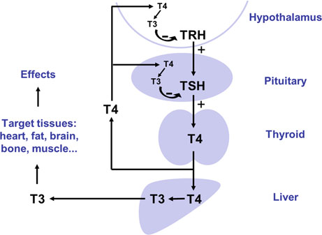
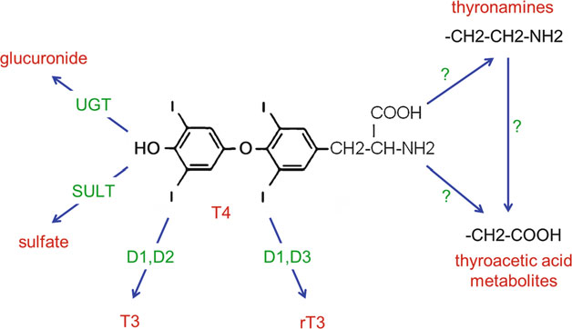
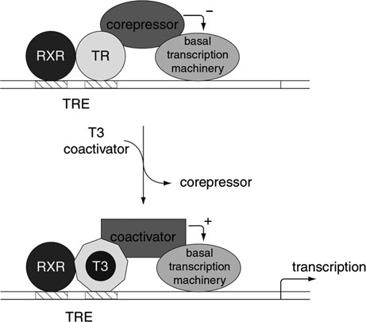

<!DOCTYPE html>
<html lang="en">
<head>
<meta charset="UTF-8">
<meta name="viewport" content="width=device-width, initial-scale=1.0">
<title>Surgical Insight Hub — Regulation of Thyroid Function, Synthesis, and Function of Thyroid Hormones Monograph</title>
<link href="https://fonts.googleapis.com/css2?family=Playfair+Display:wght@400;600;700&family=Source+Serif+4:ital,opsz,wght@0,8..60,300;0,8..60,400;0,8..60,600;1,8..60,300;1,8..60,400&family=JetBrains+Mono:wght@400;500&display=swap" rel="stylesheet">
<link rel="stylesheet" href="../../css/theme.css?v=4.0.0">
<link rel="stylesheet" href="../../css/shared.css">
<script>
  const savedTheme = localStorage.getItem('sih-theme') || 'light';
  if (savedTheme === 'dark') document.documentElement.setAttribute('data-theme', 'dark');
</script>
<style>
:root {
  --primary:   #4C1D95; 
  --primary-dk:#2E1065;
  --primary-lt:#F5F3FF;
  --accent:    #7C3AED;
  --accent2:   #E11D48;
  --gold:      #D97706;
  --gold-lt:   #FEF3C7;
  --red:       #E11D48;
  --red-lt:    #FFF1F2;
  --bg:        #FAFAFA;
  --bg2:       #F4F4F5;
  --border:    #E5E7EB;
  --text:      #0F172A;
  --muted:     #64748B;
  --white:     #FFFFFF;
  --sidebar-w: 320px;
}
[data-theme="dark"] {
  --bg: #0A0702;
  --bg2: #140E05;
  --text: #F3F4F6;
  --muted: #A3A3A3;
  --border: rgba(255,255,255,0.08);
  --primary-lt: #2E1065;
  --white: #140E05;
}
*,*::before,*::after{box-sizing:border-box;margin:0;padding:0;}
html{scroll-behavior:smooth;}
body{font-family:'Source Serif 4',Georgia,serif;background:var(--bg);color:var(--text);font-size:16px;line-height:1.75;}

#sidebar {
  position: fixed; top: 0; left: 0; width: var(--sidebar-w); height: 100vh;
  background: var(--primary-dk); color: #F5F3FF;
  display: flex; flex-direction: column;
  z-index: 1000; overflow: hidden;
  transform: translateX(-100%);
  transition: transform 0.3s cubic-bezier(0.4, 0, 0.2, 1);
  box-shadow: 4px 0 24px rgba(0,0,0,0.4);
}
body.sidebar-open #sidebar { transform: translateX(0); }

#sidebar-overlay {
  position: fixed; top: 0; left: 0; width: 100vw; height: 100vh;
  background: rgba(46, 16, 101, 0.7); backdrop-filter: blur(3px);
  z-index: 950; opacity: 0; pointer-events: none; transition: opacity 0.3s ease;
}
body.sidebar-open #sidebar-overlay { opacity: 1; pointer-events: auto; }

#sidebar-toggle {
  position: fixed; top: 72px; left: 24px; z-index: 900;
  background: var(--primary); color: white;
  border: none; border-radius: 30px;
  padding: 10px 18px; font-family: 'JetBrains Mono', monospace; font-size: 13px; font-weight: 600;
  letter-spacing: 0.05em; cursor: pointer; box-shadow: 0 4px 12px rgba(0,0,0,0.25);
  display: flex; align-items: center; gap: 8px; transition: all 0.2s;
}
#sidebar-toggle:hover { background: var(--accent2); transform: translateY(-2px); }

#sidebar-header{padding:20px 20px 14px;border-bottom:1px solid rgba(255,255,255,0.08);flex-shrink:0;}
#sidebar-header .logo{font-family:'Playfair Display',serif;font-size:13px;font-weight:700;color:var(--accent2);letter-spacing:0.08em;text-transform:uppercase;margin-bottom:4px;}
#sidebar-header .sub{font-size:10.5px;color:rgba(245,243,255,0.6);letter-spacing:0.04em;}
#sidebar-search{padding:10px 14px;border-bottom:1px solid rgba(255,255,255,0.05);flex-shrink:0;}
#sidebar-search input{width:100%;background:rgba(255,255,255,0.05);border:1px solid rgba(255,255,255,0.1);border-radius:6px;color:#F5F3FF;padding:6px 10px;font-size:12px;font-family:'Source Serif 4',serif;outline:none;transition:border-color 0.2s;}
#sidebar-search input::placeholder{color:rgba(245,243,255,0.4);}
#sidebar-search input:focus{border-color:var(--accent2);}
#sidebar-nav{flex:1;overflow-y:auto;padding:8px 0 20px;}
#sidebar-nav::-webkit-scrollbar{width:4px;}
#sidebar-nav::-webkit-scrollbar-thumb{background:rgba(255,255,255,0.15);border-radius:2px;}
.vol-label{font-size:9.5px;font-weight:600;letter-spacing:0.12em;text-transform:uppercase;color:var(--accent2);padding:14px 18px 4px;}
.nav-item{display:block;padding:8px 18px 8px 22px;font-size:12.5px;color:rgba(245,243,255,0.8);text-decoration:none;border-left:2px solid transparent;transition:all 0.15s;line-height:1.4;}
.nav-item:hover{color:#fff;background:rgba(255,255,255,0.03);border-left-color:rgba(225,29,72,0.5);}
.nav-item.active{color:#fff;background:rgba(255,255,255,0.06);border-left-color:var(--accent2);font-weight:600;}
.nav-item .num{font-family:'JetBrains Mono',monospace;font-size:10px;color:rgba(245,243,255,0.4);margin-right:6px;}

#main{margin-left:0; min-height:100vh;}
#hero{background:linear-gradient(135deg,var(--primary-dk) 0%,#4C1D95 60%,#2E1065 100%);color:white;padding:120px 72px 60px;position:relative;overflow:hidden;}
#hero::before{content:'';position:absolute;top:-60px;right:-60px;width:380px;height:380px;background:radial-gradient(circle,rgba(225,29,72,0.15) 0%,transparent 70%);pointer-events:none;}
#hero::after{content:'';position:absolute;bottom:0;left:0;right:0;height:3px;background:linear-gradient(90deg,var(--accent2),var(--gold),transparent);}
#hero .eyebrow{font-family:'JetBrains Mono',monospace;font-size:11px;letter-spacing:0.16em;color:var(--accent2);text-transform:uppercase;margin-bottom:14px;}
#hero h1{font-family:'Playfair Display',serif;font-size:42px;font-weight:700;line-height:1.15;margin-bottom:10px;color:#fff;}
#hero .subtitle{font-size:18px;color:rgba(255,255,255,0.8);font-style:italic;margin-bottom:28px;}
#hero .badges{display:flex;gap:10px;flex-wrap:wrap;}
#hero .badge{background:rgba(255,255,255,0.1);border:1px solid rgba(255,255,255,0.2);border-radius:20px;padding:4px 14px;font-size:12px;color:rgba(255,255,255,0.95);font-family:'JetBrains Mono',monospace;}

.content-wrap{max-width:900px;margin:0 auto;padding:40px 48px 80px;}

.callout{margin:18px 0;padding:14px 18px;border-radius:0 8px 8px 0;border-left:4px solid;font-size:14px;line-height:1.65;}
.callout .label{font-family:'JetBrains Mono',monospace;font-size:10px;font-weight:600;letter-spacing:0.12em;text-transform:uppercase;display:block;margin-bottom:4px;}
.callout.pearl{background:var(--gold-lt);border-color:var(--gold);color:var(--text);}
.callout.pearl .label{color:var(--gold);}
.callout.warn{background:var(--red-lt);border-color:var(--red);color:var(--text);}
.callout.warn .label{color:var(--red);}

@media(max-width:900px) {
  .content-wrap { padding: 20px 20px 60px; }
  #hero { padding: 80px 20px 40px; }
  #hero h1 { font-size: 30px; }
  #sidebar-toggle { top: 64px; left: 16px; }
}
</style>
<link rel="icon" type="image/png" href="../../assets/images/Surgical_Insight_Hub_Logo.png">
</head>
<body>

<nav class="nav" id="mainNav">
  <div class="nav-left">
    <a href="../../index.html" class="nav-pill">
      <div class="nav-logo-img">
        
      </div>
      <div>
        <div class="nav-brand-text">Surgical Insight Hub</div>
        <div class="nav-brand-sub">The Residency Journal</div>
      </div>
    </a>
  </div>
  <div class="nav-links-pill">
    <a href="../../index.html">Home</a>
    <a href="../../notes.html" class="active">Notes</a>
    <a href="../operative_approach.html">Playbook</a>
    <a href="../../arena.html?v=4.0.0">MCQ Arena</a>
    <a href="../../podcast.html">Podcast</a>
    <a href="../../surgery-talk.html">Surgery Talk</a>
    <a href="../../about.html">About</a>
  </div>
  <div class="nav-right">
    <button class="theme-toggle" id="themeToggle" aria-label="Toggle Theme">
      <svg id="moonIcon" viewBox="0 0 24 24" width="18" height="18"><path d="M21 12.79A9 9 0 1 1 11.21 3 7 7 0 0 0 21 12.79z"></path></svg>
      <svg id="sunIcon" style="display:none;" viewBox="0 0 24 24" width="18" height="18"><circle cx="12" cy="12" r="5"></circle><line x1="12" y1="1" x2="12" y2="3"></line><line x1="12" y1="21" x2="12" y2="23"></line><line x1="4.22" y1="4.22" x2="5.64" y2="5.64"></line><line x1="18.36" y1="18.36" x2="19.78" y2="19.78"></line><line x1="1" y1="12" x2="3" y2="12"></line><line x1="21" y1="12" x2="23" y2="12"></line><line x1="4.22" y1="19.78" x2="5.64" y2="18.36"></line><line x1="18.36" y1="5.64" x2="19.78" y2="4.22"></line></svg>
    </button>
    <a href="https://t.me/sugicalInsightHub" target="_blank" class="nav-tg-btn" title="Join Telegram">
      <svg width="18" height="18" viewBox="0 0 24 24" fill="#f0d080"><path d="M12 0C5.37 0 0 5.37 0 12s5.37 12 12 12 12-5.37 12-12S18.63 0 12 0zm5.89 8.22l-1.97 9.28c-.15.66-.54.82-1.08.51l-3-2.21-1.45 1.39c-.16.16-.3.3-.61.3l.21-3.05 5.56-5.02c.24-.21-.05-.33-.37-.12l-6.87 4.33-2.96-.92c-.64-.2-.66-.64.14-.95l11.57-4.46c.54-.19 1.01.13.83.94z"/></svg>
    </a>
    <a href="../../arena.html?v=4.0.0" class="nav-btn arena-btn">MCQ Arena</a>
  </div>
</nav>

<div class="mob-nav-overlay" id="mobNavOverlay" onclick="closeMobNav()"></div>
<div class="mob-nav-sheet" id="mobNavSheet">
  <div class="mob-nav-handle"></div>
  <a href="../../index.html" onclick="closeMobNav()">Home</a>
  <a href="../../notes.html" onclick="closeMobNav()">Notes</a>
  <a href="../operative_approach.html" onclick="closeMobNav()">Playbook</a>
  <a href="../../podcast.html" onclick="closeMobNav()">Podcast</a>
  <a href="../../surgery-talk.html" onclick="closeMobNav()">Surgery Talk</a>
  <a href="../../arena.html" onclick="closeMobNav()">MCQ Arena</a>
  <a href="../../about.html" onclick="closeMobNav()">About</a>
  <a href="https://t.me/sugicalInsightHub" target="_blank" rel="noopener" onclick="closeMobNav()" style="color: var(--brand-gold); font-weight: 800;">Join Telegram Community</a>
</div>

<button id="sidebar-toggle" onclick="toggleSidebar()">
  <span>📜</span> Chapter Navigation
</button>
<div id="sidebar-overlay" onclick="closeSidebar()"></div>

<aside id="sidebar">
  <div id="sidebar-header">
    <div class="logo">Surgical Insight Hub</div>
    <div class="sub">Thyroid Dx Textbook Series</div>
  </div>
  <div id="sidebar-search">
    <input type="text" placeholder="Search chapters..." oninput="filterNav(this.value)">
  </div>
  <nav id="sidebar-nav">
    <div class="vol-label">All 25 Endocrine Chapters</div>
    <a class="nav-item active" href="endocrine_ch01_regulation_of_thyroid_function.html"><span class="num">Ch 1</span>Regulation of Thyroid Function, Synthesis, and Function of Thyroid Hormones</a>
<a class="nav-item" href="endocrine_ch02_tests_of_thyroid_function.html"><span class="num">Ch 2</span>Tests of Thyroid Function</a>
<a class="nav-item" href="endocrine_ch03_thyroid_autoantibodies.html"><span class="num">Ch 3</span>Thyroid Autoantibodies</a>
<a class="nav-item" href="endocrine_ch04_nonisotopic_thyroid_imaging.html"><span class="num">Ch 4</span>Nonisotopic Thyroid Imaging</a>
<a class="nav-item" href="endocrine_ch05_nontoxic_goiter.html"><span class="num">Ch 5</span>Nontoxic Goiter</a>
<a class="nav-item" href="endocrine_ch06_thyroid_nodule.html"><span class="num">Ch 6</span>Thyroid Nodule</a>
<a class="nav-item" href="endocrine_ch07_hashimoto_s_thyroiditis.html"><span class="num">Ch 7</span>Hashimoto´s Thyroiditis</a>
<a class="nav-item" href="endocrine_ch08_postpartum_thyroiditis_and_sil.html"><span class="num">Ch 8</span>Postpartum Thyroiditis and Silent Thyroiditis</a>
<a class="nav-item" href="endocrine_ch09_acute_and_subacute_thyroiditis.html"><span class="num">Ch 9</span>Acute and Subacute Thyroiditis</a>
<a class="nav-item" href="endocrine_ch10_classification_and_etiopathoge.html"><span class="num">Ch 10</span>Classification and Etiopathogenesis of Hypothyroidism</a>
<a class="nav-item" href="endocrine_ch11_congenital_hypothyroidism.html"><span class="num">Ch 11</span>Congenital Hypothyroidism</a>
<a class="nav-item" href="endocrine_ch12_central_hypothyroidism.html"><span class="num">Ch 12</span>Central Hypothyroidism</a>
<a class="nav-item" href="endocrine_ch13_diagnosis_and_treatment_of_hyp.html"><span class="num">Ch 13</span>Diagnosis and Treatment of Hypothyroidism</a>
<a class="nav-item" href="endocrine_ch14_graves_disease.html"><span class="num">Ch 14</span>Graves´ Disease</a>
<a class="nav-item" href="endocrine_ch15_graves_ophthalmopathy.html"><span class="num">Ch 15</span>Graves´ Ophthalmopathy</a>
<a class="nav-item" href="endocrine_ch16_treatment_of_graves_disease.html"><span class="num">Ch 16</span>Treatment of Graves´ Disease</a>
<a class="nav-item" href="endocrine_ch17_toxic_adenoma_and_multinodular.html"><span class="num">Ch 17</span>Toxic Adenoma and Multinodular Toxic Goiter</a>
<a class="nav-item" href="endocrine_ch18_pathogenesis_of_thyroid_carcin.html"><span class="num">Ch 18</span>Pathogenesis of Thyroid Carcinoma</a>
<a class="nav-item" href="endocrine_ch19_differentiated_thyroid_carcino.html"><span class="num">Ch 19</span>Differentiated Thyroid Carcinoma of Follicular Origin</a>
<a class="nav-item" href="endocrine_ch20_medullary_carcinoma.html"><span class="num">Ch 20</span>Medullary Carcinoma</a>
<a class="nav-item" href="endocrine_ch21_anaplastic_and_other_forms_of_.html"><span class="num">Ch 21</span>Anaplastic and Other Forms of Thyroid Carcinoma</a>
<a class="nav-item" href="endocrine_ch22_new_medical_treatment_for_thyr.html"><span class="num">Ch 22</span>New (Medical) Treatment for Thyroid Carcinoma</a>
<a class="nav-item" href="endocrine_ch23_thyroid_physiology_and_thyroid.html"><span class="num">Ch 23</span>Thyroid Physiology and Thyroid Diseases in Pregnancy</a>
<a class="nav-item" href="endocrine_ch24_non_thyroidal_illness.html"><span class="num">Ch 24</span>Non-thyroidal Illness</a>
<a class="nav-item" href="endocrine_ch25_drugs_and_other_substances_int.html"><span class="num">Ch 25</span>Drugs and Other Substances Interfering with Thyroid Function</a>

  </nav>
</aside>

<main id="main">
<header id="hero">
  <div class="eyebrow">Endocrine Surgery · Chapter 1</div>
  <h1>Regulation of Thyroid Function, Synthesis, and Function of Thyroid Hormones</h1>
  <p class="subtitle">Structured Surgical Monograph formatted with fluid prose, inline textbook diagnostic plates, and clinical guidance.</p>
  <div class="badges">
    <span class="badge">Chapter 1</span>
    <span class="badge">Inline Plates</span>
    <span class="badge">Thyroid Dx PDF</span>
  </div>
</header>

<div class="content-wrap">
  <section class="topic">
    
    <div class="callout pearl" style="margin-bottom:28px;">
      <span class="label">🎓 TEXTBOOK MONOGRAPH — THYROID DX</span>
      Full surgical monograph extracted directly from <strong>Thyroid Pathology and Laboratory Diagnostics</strong> (Chapter 1: Regulation of Thyroid Function, Synthesis, and Function of Thyroid Hormones). Features complete text, formatted clinical guidance, and inline textbook figures.
    </div>
<ul style="margin:12px 0 20px 20px;">
<li style="margin-bottom:8px; line-height:1.65;"><strong>Regulation of Thyroid</strong> Function, Synthesis, and Function of Thyroid Hormones Theo J. Visser Contents</li>
</ul>
<h3 style="font-family:'Playfair Display',serif; font-size:20px; color:var(--primary); margin:32px 0 14px; border-bottom:1px solid var(--border); padding-bottom:6px;">Introduction .......................................................................................</h3>

                <div style="display:flex; gap:16px; margin:20px 0; padding:16px; border-radius:14px; border:1px solid var(--border); background:var(--bg2); align-items:center;">
                  <div style="width:180px; min-width:180px; height:140px; border-radius:10px; overflow:hidden; border:1px solid var(--border); background:#fff; display:flex; align-items:center; justify-content:center; padding:6px; flex-shrink:0;">
                    
                  </div>
                  <div style="flex:1;">
                    <div style="font-family:'JetBrains Mono',monospace; font-size:11px; font-weight:700; color:var(--accent2); text-transform:uppercase; margin-bottom:6px;">Textbook Illustration &amp; Diagnostic Plate</div>
                    <div style="font-size:13.5px; color:var(--muted); line-height:1.5;">High-resolution diagnostic plate illustrating introduction ....................................................................................... in Chapter 1.</div>
                  </div>
                </div>
<p style="font-size:16px; line-height:1.75; margin-bottom:16px; color:var(--text);">Regulation of Thyroid Function .................................................................. TRH ........................................................................................... TSH ............................................................................................ Thyrostimulin ................................................................................. Biosynthesis of Thyroid Hormone ............................................................... Iodide Uptake ................................................................................. Thyroid Hormone Synthesis .................................................................. Formation of Iodothyronines ................................................................. Release of Thyroid Hormone ................................................................. Inhibitors of Thyroid Hormone Production and/or Secretion ................................ Transport of Thyroid Hormone ................................................................... Plasma Transport .............................................................................. Tissue Transport ............................................................................... Metabolism of Thyroid Hormone ................................................................ Deiodination ................................................................................... Alanine Side Chain Modification ............................................................. Sulfation ....................................................................................... Glucuronidation ............................................................................... Thyroid Hormone Actions ........................................................................ Mechanism of T3 Action ..................................................................... T3 Inhibition of TSH and TRH Gene Expression ...........................................</p>
<h3 style="font-family:'Playfair Display',serif; font-size:20px; color:var(--primary); margin:32px 0 14px; border-bottom:1px solid var(--border); padding-bottom:6px;">References ........................................................................................</h3>

                <div style="display:flex; gap:16px; margin:20px 0; padding:16px; border-radius:14px; border:1px solid var(--border); background:var(--bg2); align-items:center;">
                  <div style="width:180px; min-width:180px; height:140px; border-radius:10px; overflow:hidden; border:1px solid var(--border); background:#fff; display:flex; align-items:center; justify-content:center; padding:6px; flex-shrink:0;">
                    
                  </div>
                  <div style="flex:1;">
                    <div style="font-family:'JetBrains Mono',monospace; font-size:11px; font-weight:700; color:var(--accent2); text-transform:uppercase; margin-bottom:6px;">Textbook Illustration &amp; Diagnostic Plate</div>
                    <div style="font-size:13.5px; color:var(--muted); line-height:1.5;">High-resolution diagnostic plate illustrating references ........................................................................................ in Chapter 1.</div>
                  </div>
                </div>
<p style="font-size:16px; line-height:1.75; margin-bottom:16px; color:var(--text);">This chapter is adapted from Visser (2011). T. J. Visser (*) Department of Internal Medicine, Erasmus University Medical Center, Rotterdam, The Netherlands e-mail: t.j.visser@erasmusmc.nl # Springer International Publishing AG, part of Springer Nature 2018 P. Vitti, L. Hegedüs (eds.), Thyroid Diseases, Endocrinology, Abstract Thyroid hormone (TH) is a common name for the two products secreted by thyroid follicles, namely the prohormone thyroxine (T4) as the major product and the active hormone triiodothyronine (T3) as the minor product. Most T3 is produced by deiodination of T4 in peripheral tissues. TH is essential for the development of different tissues, in particular the central nervous system, and for the function of the tissues throughout life. The secretion of thyroid hormone is regulated within the hypothalamus-pituitary thyroid axis, but the biological activity of thyroid hormone is largely regulated at the level of the target tissues. This chapter covers various aspects of (a) the neuroendocrine regulation of thyroid function, (b) the biosynthesis of thyroid hormone, in particular T4, (c) the local regulation of bioactive TH in target tissues, and (d) the mechanisms by which T3 exerts its biological activities. Keywords Thyroid hormone · Thyroxine (T4) · Triiodothyronine (T3) · Thyrotropin- releasing hormone (TRH) · Thyroid-stimulating hormone (TSH) · Hypothalamus · pituitary · Thyroid gland · Serum thyroid hormone-binding proteins · Transporters · Deiodinases · Nuclear receptors</p>
<h3 style="font-family:'Playfair Display',serif; font-size:20px; color:var(--primary); margin:32px 0 14px; border-bottom:1px solid var(--border); padding-bottom:6px;">Introduction</h3>

                <div style="display:flex; gap:16px; margin:20px 0; padding:16px; border-radius:14px; border:1px solid var(--border); background:var(--bg2); align-items:center;">
                  <div style="width:180px; min-width:180px; height:140px; border-radius:10px; overflow:hidden; border:1px solid var(--border); background:#fff; display:flex; align-items:center; justify-content:center; padding:6px; flex-shrink:0;">
                    
                  </div>
                  <div style="flex:1;">
                    <div style="font-family:'JetBrains Mono',monospace; font-size:11px; font-weight:700; color:var(--accent2); text-transform:uppercase; margin-bottom:6px;">Textbook Illustration &amp; Diagnostic Plate</div>
                    <div style="font-size:13.5px; color:var(--muted); line-height:1.5;">High-resolution diagnostic plate illustrating introduction in Chapter 1.</div>
                  </div>
                </div>
<p style="font-size:16px; line-height:1.75; margin-bottom:16px; color:var(--text);">Normally, human thyroid follicular cells produce predominantly the prohormone thyroxine (3,30,5,50-tetraiodothyronine; T4), which is converted in peripheral tissues to the bioactive hormone 3,30,5-triiodothyronine (T3). The bioavailability of thyroid hormone (TH) in target tissues largely depends on the supply of plasma T4 and T3, the activity of transporters mediating the cellular uptake and/or efflux of these hormones, as well as the activity of deiodinases catalyzing the activation or inactivation of TH. Thyroid function is under positive control of thyroid- stimulating hormone (TSH), also called thyrotropin. In turn, TSH secretion from the anterior pituitary is stimulated by the hypothalamic factor thyrotropin- releasing hormone (TRH). TSH secretion is downregulated by negative feedback action of TH on the hypothalamus and the pituitary. The contribution of locally produced T3 versus uptake of plasma T3 is much greater for some tissues such as the brain and the pituitary than for other tissues. Although serum TSH is an important parameter for the diagnosis of thyroid dysfunction, it is not representa- tive for the thyroid state of all tissues. In this chapter various aspects will be discussed of (a) the neuroendocrine regulation of thyroid function, (b) the biosyn- thesis of TH (i.e., the prohormone T4), (c) the local regulation of bioactive TH in target tissues, and (d) the mechanisms by which T3 exerts its biological activities. A schematic overview of the hypothalamus-pituitary-thyroid-periphery axis is presented in Fig. 1. T. J. Visser Regulation of Thyroid Function TRH TRH is a tripeptide, pyroglutamyl-histidyl-prolineamide (pGlu-His-ProNH2) in which the C-terminal carboxyl group is blocked by amidation and the N-terminal α-amino group is blocked by cyclization (Joseph-Bravo et al. 2015). Besides stimulating TSH secretion, TRH also stimulates prolactin secretion from the anterior pituitary. TRH is not only produced in the hypothalamus but is widely distributed throughout the central nervous system. It is also detected in the posterior pituitary and in different peripheral tissues, such as the heart, adrenal, ovary, testis, uterus, and placenta. Hypophysiotropic TRH is produced in neurons, the cell bodies of which are located in the paraventricular nucleus (PVN) of the hypothalamus (Fliers et al. 2006). The synthesis of TRH involves the production of a large precursor protein (proTRH). Human proTRH consists of 242 amino acids and contains 6 copies of the TRH progenitor sequence Gln-His-Pro-Gly, flanked at both sides by pairs of basic amino acids (Arg, Lys). Cleavage of proTRH at the basic amino acids by prohormone convertases and further removal of remaining basic residues by carboxypeptidases result in the liberation of the progenitor sequences. A specific glutaminyl cyclase catalyzes the formation of the pGlu ring, and peptidylglycine-α-amidating-monooxygenase (PAM) converts Pro-Gly to ProNH2, ultimately yielding mature TRH (Perello and Nillni 2007). The processing of proTRH takes place in vesicles which transport mature TRH and intervening peptides along the axons of the TRH neurons to the median eminence (ME), where they are released into the portal vessels of the hypophyseal stalk. Some of the intervening peptides may have biological activities (Perello and Nillni 2007). TRH is transported through the hypophyseal stalk to the anterior lobe of the pituitary, where it stimulates the production and secretion of TSH (and prolactin). These actions of TRH are initiated by its binding to the TRH receptor (TRHR) which Fig. 1 Schematic of the regulation of the production and metabolism of thyroid hormone in the hypothalamus- pituitary-thyroid-periphery axis, showing the liver as a major T3-producing tissue Regulation of Thyroid Function, Synthesis, and Function of Thyroid Hormones is expressed on both the thyrotroph (TSH-producing cell) and the lactotroph (prolactin-producing cell) (Sun et al. 2003). This receptor belongs to the family of G protein-coupled receptors, characteristically containing seven transmembrane domains. Human TRHR is a protein consisting of 398 amino acids, and binding of TRH induces a change in its interaction with the trimeric G protein, resulting in the stimulation of phospholipase C (PLC) activity. The activated PLC catalyzes the hydrolysis of phosphatidylinositol 4,5-diphosphate to the second messengers inositol 1,4,5-trisphosphate and diacylglycerol, which initiate a cascade of reactions, including an increase in cellular Ca2+ levels and protein kinase C (PKC) activity, that ultimately stimulates the synthesis as well as the release of TSH (and prolactin) (Joseph-Bravo et al. 2016). Stimulation of TSHβ gene expression by TRH depends on the presence of the pituitary-specific transcription factor POU1F1, previously known as Pit-1. In addition to the anterior pituitary, TRHR is also expressed in different peripheral tissues, including the brain, heart, ovary, uterus, and thyroid. Some of these tissues also express TRH, suggesting that TRH has also actions outside the anterior pituitary. The expression of TRH and TRHR in different brain regions underlies the function of TRH as a neurotransmitter or neuromodulator. Centrally mediated actions of TRH include neurobehavioral, hemodynamic, and gastrointestinal effects. In rats and mice, these central activities are mediated by a separate TRH receptor, Trhr2. Rat and mouse Trhr1 corresponds with human TRHR (Sun et al. 2003). TRH is rapidly degraded in blood and in different tissues, in particular the brain, pituitary, liver, and lung. Although multiple enzymes are involved, an important role is played by the TRH-degrading ectoenzyme TRHDE, also called pyroglutamyl peptidase II, which catalyzes the cleavage of the pGlu-His bond in TRH (Heuer et al. 1998). This enzyme has been characterized as a zinc-containing metalloproteinase which in humans consists of 1024 amino acids. It has a single transmembrane domain and is inserted in the plasma membrane such that most of the protein is exposed on the cell surface (ectopeptidase). Enzymatic cleavage of the protein close to the cell membrane releases most of the protein in a soluble and enzymatically active form into the circulation. Plasma TRHDE is derived mostly from the liver. In the brain and the pituitary, TRHDE is located in close vicinity of the TRH receptor, where it plays an important role in the local regulation of TRH bioavailability. Interestingly, TRHDE activity in the pituitary and in plasma is increased in hyper- thyroidism and decreased in hypothyroidism which may contribute to the negative feedback control of TSH secretion by TH (Heuer et al. 1998). The synthesis and release of hypothalamic TRH is importantly regulated by negative feedback action of TH (Joseph-Bravo et al. 2015; Mariotti and Beck- Peccoz 2016). Since TH stimulates energy expenditure and thermogenesis, it is not surprising that cold exposure induces hypothalamic TRH secretion with consequent stimulation of the HPTaxis. The activity of the HPTaxis is also regulated by feeding, with an important role for leptin. Fasting is associated with a central downregulation of the HPT axis, which is prevented in animal studies by administration of leptin (Joseph-Bravo et al. 2015; Mullur et al. 2014). Bi-allelic inactivating mutations in TRH or TRHR are obvious causes of con- genital central hypothyroidism, but no patients have been identified with central T. J. Visser hypothyroidism caused by mutations in TRH, and only three families have been reported with central hypothyroidism caused by mutations in TRHR (Bonomi et al. 2009; Koulouri et al. 2016; Garcia et al. 2017). TSH TSH is a glycoprotein produced by the thyrotropic cells of the anterior pituitary. Like the other hypophyseal hormones, luteinizing hormone (LH) and follicle- stimulating hormone (FSH), it is composed of two subunits. The α subunit is identical and the β subunit is homologous among the three hormones (Mariotti and Beck-Peccoz 2016). Although hormone specificity is determined by the β subunit, heterodimerization with the α subunit is required for biological activity. Human TSH consists of 205 amino acids, 92 in the α subunit and 113 in the β subunit. It has a molecular weight of 28 kDa, 20% of which is contributed by three complex carbohydrate groups: two on the α subunit and one on the ß subunit. The structure of these carbohydrate groups is important for the biological activity of TSH and is dependent on the stimulation of the thyrotroph by TRH (Mariotti and Beck-Peccoz 2016). In addition to the stimulation by TRH and negative feedback by TH, TSH production and secretion is also subject to negative regulation by hypothalamic somatostatin and dopamine and by cortisol. The inhibitory effect of cortisol is exerted at both the hypothalamic and pituitary level (Mariotti and Beck-Peccoz 2016). TSH binds to a specific TSH receptor (TSHR) located in the plasma membrane of the follicular cell. Like the TRH receptor, this is also a G protein-coupled receptor which, in humans, is a protein consisting of 764 amino acids with an exceptionally long extracellular N-terminal domain (Kleinau et al. 2017). TSHR is preferentially coupled to a Gsα subunit of the trimeric G protein. Binding of TSH to its receptor induces the dissociation of the G protein subunits, resulting in the activation of the membrane-bound adenylate cyclase and, thus, in the stimulation of cAMP formation as second messenger. The increased cAMP levels activate several cellular processes, ultimately resulting in an increased production and secretion of TH (Maenhaut et al. 2015). In particular, the expression of genes coding for key players in TH production (e.g., the iodide transporter, thyroglobulin, and thyroid peroxidase) is increased through mechanisms which also involve different thyroid-specific transcription factors such as TTF1 (NKX2-1), TTF2 (FOXE1), and PAX8. At high TSH concen- trations, TSHR also couples to the Gqα subunit, resulting in the activation of the phosphoinositide pathway, which is also involved in the regulation of thyroid function and growth (Maenhaut et al. 2015). As discussed elsewhere in this volume, hyperthyroidism is often caused by an autoimmune process in which TSHR-stimulating antibodies play an important role. Hyperthyroidism may also be caused by a hyper-functioning adenoma. In most patients with a toxic adenoma, somatic mutations have been identified in TSHR, which result in the constitutive activation of this receptor (Davies et al. 2005). In other patients, somatic mutations have been found in the Gsα subunit which result Regulation of Thyroid Function, Synthesis, and Function of Thyroid Hormones in the constitutive activation of the G protein in the absence of TSH. Together, mutations in TSHR and Gsα account for the majority of toxic thyroid adenomas. Also, germline activating TSHR mutations have been identified in patients with congenital, non-autoimmune hyperthyroidism. Conversely, germline inactivating TSHR mutations have been described in patients with TSH resistance (Persani et al. 2010). Often, TSH resistance is partial, and patients are clinically euthyroid as the diminished TSHR function is compensated by increased plasma TSH levels. However, complete absence of functional TSHR causes severe congenital hypo- thyroidism associated with thyroid hypoplasia (Persani et al. 2010). Several patients have been reported with congenital central hypothyroidism caused by bi-allelic inactivating mutations in TSHβ (Nicholas et al. 2017). Since TSHR has some basal constitutive activity in the absence of TSH, one would expect that patients who lack functional TSH are only moderately hypothyroid. However, this is refuted by the identification of patients with severe congenital hypothyroidism caused by bi-allelic inactivating TSHβ mutations (Nicholas et al. 2017). Thyrostimulin Thyrostimulin was discovered in 2002 and consists of a second α subunit (glyco- protein hormone A2, GPHA2) and a fifth β subunit (GPHB5) which are homologous to the GPHA1 and GPHB1–4 subunits of TSH, LH, FSH, and hCG (Hsu et al. 2002; Nakabayashi et al. 2002). In evolutionary terms, it is the most ancient glycoprotein hormone which is expressed in vertebrates and invertebrates, displaying various biological activities (Karponis and Ananth 2017). Bioactive human thyrostimulin is produced by co-transfection of cells with GPHA2 and GPHB5, and appears to be even more active than TSH in stimulating TSHR, whereas it does not stimulate the LH and FSH receptors (Okada et al. 2006). In mice, overexpression of GPHB5 induces hyperthyroidism, but deletion of GPHB5 has little effect on serum TH levels (Okada et al. 2006). In humans, GPHA2 and GPHB5 are expressed in various tissues, where GPHA2 mRNA levels are usually much higher than GPHB5 mRNA levels, and by far the highest GPHA2 expression is observed in the pancreas. In the human anterior pituitary, GHPA2 and GHPB5 are co-expressed in corticotrophs (Okada et al. 2006). In mice, thyrostimulin may have a biological function in bone development, but the physiological role of thyrostimulin in humans remains to be established. Biosynthesis of Thyroid Hormone The functional unit of the thyroid gland is the follicle, composed of a single layer of epithelial cells surrounding a colloidal lumen in which TH is produced and stored. This section is a brief overview of the steps involved in the production and secretion of TH, schematically presented in Fig. 2. An extensive overview has been published recently (Carvalho and Dupuy 2017). T. J. Visser Iodide Uptake Iodine is an essential trace element required for the synthesis of TH. It is not surprising, therefore, that the basolateral membrane of the follicular cell contains an active trans- porter that mediates uptake of I together with Na+. The human Na/I symporter (NIS, SLC5A5) has been characterized as a protein consisting of 618 amino acids and 13 transmembrane domains (Ravera et al. 2017; Carvalho and Dupuy 2017; Targovnik et al. 2017). NIS transports I and Na+ in a stoichiometry of 1:2, indicating that I transport is electrogenic and driven by the Na+ gradient across the plasma membrane. TSH stimulates the expression of the NIS gene to such an extent that the intracellular iodide concentration may be up to 500-fold higher than its extracellular level. The activity of NIS also strictly requires its interaction with the KCNQ1-KCNE2 K+ channel in thyroid cells, but the exact mechanism of this interaction is unknown (Ravera et al. 2017). Various NIS mutations have been identified in patients with congenital hypothyroidism (Targovnik et al. 2017; Ravera et al. 2017; Carvalho and Dupuy 2017). NIS is not completely specific for iodide but also binds other anions, some of which are even transported. An important example is perchlorate (ClO4 ) which potently inhibits iodide uptake by NIS, an effect utilized in the perchlorate discharge test used for the diagnosis of an organification defect, i.e., impaired incorporation of iodine in Tg (Targovnik et al. 2017). Perchlorate inhibits the uptake but not the release of iodide from the thyroid. Therefore, if perchlorate is administered after a dose of radioactive iodide, it will provokeamarkedreleaseof radioactivity from thethyroidincaseof anorganification defect but not from a normal thyroid gland. Importantly, perchlorate is also an environ- mental pollutant with potential thyroid disrupting activity (Leung et al. 2014). Fig. 2 Schematic of a thyroid follicular cell and important steps in the synthesis of thyroid hormone Regulation of Thyroid Function, Synthesis, and Function of Thyroid Hormones Pertechnetate (TcO4 ) is another anion transported by NIS, and this observation is utilized in the scanning of the thyroid gland using radioactive 99mTcO4 . Of course, the latter is not incorporated into thyroglobulin and, thus, cannot be used to test the hormone production capacity of the thyroid. It is not sufficient that iodide is transported across the basolateral plasma membrane of thyroid cells. Since TH production takes place at the luminal surface of the apical membrane, iodide also has to pass this membrane, and this involves at least two proteins: pendrin (PDS, SLC26A4) and anoctamin (ANO1, TMEM16A) (Silveira and Kopp 2015). Pendrin is the protein mutated in patients with Pendred’s syndrome (Wemeau and Kopp 2017), which comprises deafness due to a cochlear defect and hypothyroidism due to an organification defect (positive perchlorate discharge test). Pendrin functions as a chloride-iodide exchanger in the thyroid and as a bicarbonate- chloride exchanger in the cochlea (Silveira and Kopp 2015). ANO1 is a Ca2+-activated chloride (iodide) channel. Efflux of iodide from thyroid cells is acutely stimulated by TSH, which may involve recruitment and/or activation of these apical iodide exporters. Thyroid Hormone Synthesis Thyroglobulin (Tg) is an exceptionally large glycoprotein consisting of two identical subunits. Each mature subunit in human Tg contains 2748 amino acids and has a molecular weight of ~330 kDa (Targovnik et al. 2017; Carvalho and Dupuy 2017). The Tg gene is located on human chromosome 8q24.2-q24.3; it covers about 300 kb of genomic DNA and consists of 48 exons. Many Tg mutations have been identified in patients with congenital hypothyroidism (Targovnik et al. 2017). DUOX2 is a large and complex glycoprotein embedded in the apical membrane of the thyrocyte (Muzza and Fugazzola 2017; Carvalho and Dupuy 2017). Mature human DUOX2 contains 1527 amino acids and has 7 transmembrane domains, an NADPH-binding domain, an FAD-binding domain, a heme-binding domain, 2 cal- cium-binding EF hands, and a peroxidase domain. It catalyzes the oxidation of NADPH from the cytoplasm and delivers its product H2O2 to the luminal surface of the membrane. The heme group is the site of H2O2 generation, and its location within transmembrane domains fits with the vectorial (enzyme/transport) function of DUOX2. Functional expression of DUOX2 requires the presence of the maturation factor DUOXA2, a protein consisting of 320 amino acids and 5 putative transmem- brane domains (Carvalho and Dupuy 2017; Muzza and Fugazzola 2017). The DUOX2 and DUOXA2 genes are clustered together with the homologous DUOX1 and DUOXA1 genes on human chromosome 15q15. A large number of DUOX2 mutations and a small number of mutations in DUOXA2 have been reported in patients with congenital hypothyroidism. DUOX1 and DUOXA1 are expressed at lower levels in the thyroid and do not (fully) compensate for the loss of function mutations in DUOX2 and DUOXA2 (Muzza and Fugazzola 2017). Mature TPO is a glycoprotein consisting of 919 amino acids and featuring a single transmembrane domain. A short C-terminal domain is located in the cytoplasm, but most of the protein is exposed on the luminal surface of the apical membrane which T. J. Visser also contains a heme-binding domain, the active center of the enzyme (Targovnik et al. 2017; Carvalho and Dupuy 2017). Functional TPO exists as a homodimer where the subunits are linked through a disulfide bond. The human TPO gene covers about 150 kb on chromosome 2p25, distributed over 17 exons. In addition to full-length TPO (TPO1), other isoforms are generated by alternative splicing (TPO2–5), some of which retain enzyme activity. Over 100 TPO mutations have been identified in patients with congenital hypothyroidism (Targovnik et al. 2017). Formation of Iodothyronines TH synthesis takes place at the luminal surface of the apical membrane within the scaffold of the Tg molecule and occurs in two steps which are both catalyzed by TPO: (1) the iodination of Tyr residues and (2) the coupling of iodotyrosines with formation of iodothyronines (Carvalho and Dupuy 2017; Taurog et al. 1996). The prosthetic heme group of TPO undergoes a two-electron oxidation by H2O2 (sup- plied by DUOX2) to generate “compound I.” Compound I may perform a one-electron oxidation reaction, by which it is converted to compound II, or a two-electron oxidation by which native TPO is regenerated. TPO catalyzes the two-electron oxidation of I to I+ by H2O2 with subsequent electrophilic substitution of Tyr residues in Tg, producing 3-iodotyrosine (monoiodotyrosine, MIT). Substi- tution of MIT residues with a second iodine produces 3,5-diiodotyrosine (DIT). Coupling of two suitably positioned iodotyrosines results in the formation of an iodothyronine residue at the site of the acceptor iodotyrosine and a dehydroalanine residue at the site of the donor iodotyrosine. This involves the one-electron oxidation of each donor and acceptor iodotyrosine residue, generating radicals that rapidly combine to produce an iodothyronine residue. T4 is generated by the reaction of two DIT residues, and T3 is generated by reaction of an acceptor DIT with a donor MIT residue. MIT does not seem to function as an acceptor residue, since thyroidal production of rT3 (and 3,30-T2) is negligible (Carvalho and Dupuy 2017). Although Tyr is the building block of TH, the Tyr content of Tg is not greater than that of most other proteins. Of the 67 Tyr residues per Tg subunit, 20–25 are available for iodination, but the capacity for iodothyronine formation is limited. Each Tg subunit has only four hormonogenic acceptor Tyr residues that can ulti- mately be transformed into iodothyronines, localized at positions 5, 1291, 2554, and 2747 of mature Tg (Carvalho and Dupuy 2017; Targovnik et al. 2017). However, at normal levels of iodination, the average yield is 1–1.5 molecule of T4 and 0.1 molecule of T3 per Tg subunit. They are stored within the Tg scaffold in the follicular lumen until their secretion is required. Release of Thyroid Hormone In response to TSH stimulation, Tg is resorbed from the lumen by both macro- and micropinocytosis (Carvalho and Dupuy 2017; Botta et al. 2017). Macropinocytosis or Regulation of Thyroid Function, Synthesis, and Function of Thyroid Hormones fluid endocytosis involves the formation of large pseudopodia which engulf Tg-containing colloid, resulting in the formation of large cytoplasmic vesicles (colloid droplets). Micropinocytosis concerns the receptor-mediated endocytosis of Tg, which may involve different receptor proteins such as megalin, a very large (600 kDa) cargo protein located in the apical membrane of different cell types, including thyrocytes. It is believed that Tg-containing vesicles generated by receptor-mediated endocytosis largely undergo transcytosis or recycling, whereas vesicles generated by fluid endocytosis fuse with lysosomes, generating so-called phagolysosomes (Botta et al. 2017). In these vesicles, Tg is hydrolyzed by lysosomal proteases, cathepsins (Friedrichs et al. 2003), resulting in the liberation of T4, a small amount of T3, as well as excess MIT and DIT molecules. The iodotyrosines are exported from the phagolysomes by a so-called system h amino acid transporter, which may very well represent the L-type amino acid transporter LAT1 and/or LAT2 (Andersson et al. 1990; Zevenbergen et al. 2015; Krause and Hinz 2017). This provides the access of MIT and DIT to iodotyrosine dehalogenase (DEHAL1 or IYD) located in the endo- plasmic reticulum which catalyzes their deiodination by NADH (Gnidehou et al. 2004; Moreno et al. 2008). The iodide is reutilized for iodination of Tg. Human IYD is a homodimer of a 289-amino acid protein containing an N-terminal membrane anchor and a conserved nitroreductase domain with an FMN-binding site (Gnidehou et al. 2004; Moreno et al. 2008). The IYD gene is located on chromosome 6q24-q25 and consists of five exons. Since IYD lacks an NADH-binding sequence, iodotyrosine deiodinase activity requires the involvement of a reductase, which has not yet been identified. Low levels of IYD are also expressed in the liver and kidney. Little is yet known about the exact mechanism of T4 (and T3) secretion. Possibly, this also involves their release form the phagolysosomes through the system h (L-type) transporter(s). Subsequently, T4 and T3 are secreted via transporters located in the basolateral membrane, and recent evidence suggests an important role for the TH transporter MCT8 herein. Some T4 is converted before secretion to T3 by iodothyronine deiodinases present in the thyrocyte (see below). In an average human subject, T4 and T3 are secreted in a ratio of about 15:1, i.e., about 100 μg (130 nmol) T4 and 6 μg (9 nmol) T3 per day. The latter represents 20% of daily total T3 production. Hence, most T3 is produced by deiodination of T4 in peripheral tissues (Bianco et al. 2002). Inhibitors of Thyroid Hormone Production and/or Secretion Administration of a large amount of iodide usually results in an acute but transient decrease in TH secretion (Maenhaut et al. 2015). The mechanism of this inhibition of TH secretion by excess iodide is not understood. Excess iodide also results in the inhibition of TH synthesis, a phenomenon known as the Wolff-Chaikoff effect (Maenhaut et al. 2015). The mechanism appears to involve, among other things, the formation of an iodinated lipid (iodolactone) that inhibits several steps in TH synthesis. This includes the inhibition of NIS, resulting in a decrease in the intra- cellular iodide concentration and, thus, a decrease in iodolactone formation, T. J. Visser relieving the inhibited hormone synthesis. This escape from the Wolff-Chaikoff effect occurs despite the continued administration of excess iodide. Thiourea derivatives have been known since the pioneering work of Astwood in the 1940s as potent inhibitors of TH synthesis (Astwood 1984). Two of these, methimazole (MMI) and 6-propyl-2-thiouracil (PTU), are widely used in the medical treatment of patients with hyperthyroidism. Their antithyroid activity is based on the potent inhibi- tion of TPO, the mechanism of which depends on the available iodide concentration (Taurog 2000). In the presence of iodide, the thiourea inhibitors compete with the Tyr residues in Tg for the TPO-I+ iodination complex, preventing the formation of TH. MMI is a more potent inhibitor of TPO than PTU (Taurog 2000), and lower doses of MMI (or the prodrug carbimazole) are required for the treatment of hyperthyroidism compared with PTU. Besides inhibiting TH synthesis by TPO, PTU also inhibits conversion of T4 to T3 by the type 1 iodothyronine deiodinase (D1) located not only in the thyroid but also in the liver and kidney (see below). In contrast, MMI does not affect D1 activity. Transport of Thyroid Hormone Plasma Transport In plasma, TH is bound to three proteins, thyroxine-binding globulin (TBG), trans- thyretin (TTR), and albumin (Benvenga 2012; Refetoff 2015a, b). Human TBG is a 54 kDa glycoprotein produced in the liver, consisting of 395 amino acids and</p>
<ul style="margin:12px 0 20px 20px;">
<li style="margin-bottom:8px; line-height:1.65;"><strong>4 carbohydrate residues.</strong> The TBG (SERPINA7) gene is located on human chromo-</li>
</ul>
<p style="font-size:16px; line-height:1.75; margin-bottom:16px; color:var(--text);">some Xq22.3, spans 5.5 kb, and contains five exons. Of all plasma TH transport proteins, TBG has the highest affinity for T4 (Kd 0.1 nM) but also the lowest serum concentration (15 mg/l) (Benvenga 2012; Refetoff 2015a, b). TTR is a non-glycosylated protein composed of 4 identical subunits, consisting each of 127 amino acids. The TTR gene is located on human chromosome 18q12.1, covers 7 kb, and contains four exons (Richardson 2007; Benvenga 2012; Refetoff 2015a, b). TTR has a cigar-shaped structure with two identical binding channels, each formed by two symmetrically positioned subunits, with ligand entry sites at opposite ends of the TTR molecule. TTR binds the first T4 molecule with a higher affinity (Kd 10 nM) than the second T4 molecule, and its plasma concentration amounts to 250 mg/l. Plasma TTR is produced in the liver, but the protein is also expressed in the choroid plexus and the placenta, where it may be involved in plasma-cerebrospinal fluid and maternal-fetal T4 transfer, respectively. TTR also binds retinol-binding protein and thus also plays an important role in vitamin A transport (Richardson 2007). Albumin has multiple low-affinity binding sites for TH, with Kd values for T4 of 1–10 μM, but it has by far the highest plasma concentration (40 g/l) (Benvenga 2012; Refetoff 2015a, b). Iodothyronines also bind to lipoproteins, in particular high-density lipoprotein (HDL). Although the proportion of plasma T4 and T3 bound to lipoproteins is low compared with the other plasma transport proteins, it may be important to target TH specifically to lipoprotein receptor-expressing tissues (Benvenga 2012). Regulation of Thyroid Function, Synthesis, and Function of Thyroid Hormones The consequence of the different concentrations and affinities of the TH-binding proteins is that in healthy humans 75% of plasma T4 is bound to TBG, 15% to albumin, and 10% to TTR (Benvenga 2012; Refetoff 2015a, b). The total binding capacity of these proteins is so high that only 0.02% of plasma T4 is free (nonprotein- bound). The affinity of T3 for the different proteins is one-tenth of that of T4. Therefore, the free T3 fraction in plasma amounts to 0.2%. Although mean normal plasma total T4 (100 nmol/l) and T3 (2 nmol/l) levels differ about 50-fold, the difference in mean normal FT4 (20 pmol/l) and FT3 (5 pmol/l) levels is only about fourfold. rT3 binds with intermediate affinity to the plasma proteins (Benvenga 2012; Refetoff 2015a, b). Since the plasma FT4 and FT3 concentrations determine the tissue availability of TH, they are more important indices of thyroid state than total plasma T4 and T3 levels. Both concentration and TH-binding affinity of the different plasma proteins are influenced by a variety of (patho)physiological factors (Benvenga 2012). Since it binds most TH in plasma, variations in TBG concentration are more important than variations in TTR or albumin concentrations. Inherited TBG excess is a rare phe- nomenon caused by TBG gene duplication. Inherited TBG deficiency is caused by mutations in the TBG gene, resulting in a decreased T4 affinity or protein stability. More severe TBG gene defects result in a complete lack of serum TBG in affected males (Refetoff 2015a, b). Plasma TBG levels are also influenced by various endogenous and exogenous factors. Notably, plasma TBG levels are increased by estrogens, whereas they are decreased by androgens. In addition, different endoge- nous factors, such as free fatty acids, and drugs, such as salicylates, competitively inhibit T4 binding to TBG (Benvenga 2012; Refetoff 2015a, b). A large number of mutations have also been identified in the TTR gene, some of which cause a decrease in T4 binding affinity, whereas others (e.g., Ala109Thr, Thr119Met) result in an increased T4 affinity (Saraiva 2001). More importantly, TTR mutations often cause familial amyloidotic polyneuropathy (FAP), involving the deposition of insoluble TTR fibrils in nerves or the heart (Saraiva 2001). Finally, also binding of TH to albumin is subject to genetic variation. Especially, a specific increase in the binding of T4 to albumin occurs in some otherwise healthy subjects, which often leads to the false diagnosis of hyperthyroidism if inadequate methods for analysis of plasma FT4 are used (Benvenga 2012; Refetoff 2015a, b). This “familial dysalbuminemic hyperthyroxinemia” (FDH) is caused by polymorphisms in the albumin gene, in particular p.R218H, resulting in a marked increase in T4 affinity. Perturbation of plasma iodothyronine binding provokes an adaptation of the hypothalamus-pituitary-thyroid axis to maintain normal FT4 and FT3 concentra- tions. Therefore, measurement of plasma TSH and FT4 rather than total T4 levels is the cornerstone of the diagnosis of thyroid disorders. Tissue Transport The biological activity of TH is importantly regulated at the level of the target tissues, involving plasma membrane transporters which facilitate the cellular uptake and/or efflux of iodothyronines as well as deiodinases which catalyze the activation and/or inactivation of the hormone (Fig. 3). T. J. Visser Despite decades of research and evidence published by different laboratories suggesting the involvement of carrier-mediated mechanisms, it was believed for a long time that TH crosses the plasma membrane by passive diffusion. A detailed review of these early studies of cellular TH transport was published in 2001 (Hennemann et al. 2001). Since then several transporters from different protein families were identified which are capable of transporting iodothyronines. This includes several members of the organic anion transporting polypeptide (OATP) family (Abe et al. 2002; Hagenbuch 2007), the Na-taurocholate cotransporting polypeptide (NTCP) (Friesema et al. 1999), the L-type amino acid transporters LAT1 and LAT2 (Taylor and Ritchie 2007; Zevenbergen et al. 2015; Krause and Hinz 2017), and the monocarboxylate transporters MCT8 (Friesema et al. 2003, 2006) and MCT10 (Friesema et al. 2008). Detailed reviews on TH transporters have been published recently (Visser et al. 2011; Schweizer et al. 2014; Bernal et al. 2015). Of the above transporters, only NTCP (SLC10A1) transports its substrates in an Na+-dependent manner (Friesema et al. 1999; Anwer and Stieger 2014). It is exclu- sively expressed in the liver and plays an important role in hepatic uptake of (conju- gated) bile acids (Slijepcevic et al. 2017). Human NTCP is a 349-amino acid glycoprotein containing nine transmembrane domains. The SLC10A1 gene comprises five exons and is located on chromosome 14q24.1. The SLC10 family contains seven members, but only NTCP is capable of transporting (sulfated) iodothyronines (Visser et al. 2011). NTCP may be important for the liver targeting of TH analogues such as eprotirome (Kersseboom et al. 2017). Interestingly, NTCP also plays an important role as a receptor for the entry of hepatitis B and D virus in liver cells (Li and Urban 2016). The human OATP family consists of 11 members, most of which have been shown to transport iodothyronine derivatives (Hagenbuch 2007; Stieger and Hagenbuch 2014; van der Deure et al. 2010). In general they are multi-specific, transporting a variety of ligands, not only anionic but also neutral and even cationic compounds. OATPs are glycoproteins containing ~700 amino acids and 12 trans- membrane domains. The human OATP1 subfamily contains four members (OATP1A2, 1B1, 1B3, 1C1) with interesting properties. They are encoded by genes clustering on chromosome12p12, each containing 14–15 exons. OATP1B1 and 1B3 are expressed only in the liver and show preferential transport of sulfated over non-sulfated iodothyronines. OATP1A2 also effectively transports non-sulfated Fig. 3 Pathways of thyroid hormone metabolism Regulation of Thyroid Function, Synthesis, and Function of Thyroid Hormones T4 and T3 and is expressed in different tissues, including the liver, kidney, intestine, and brain. OATP1C1 is the most interesting transporter in this subfamily, showing a high preference for T4 as the ligand and almost exclusive expression in the brain, in particular in astrocytes and the choroid plexus (blood-CSF barrier) (Pizzagalli et al. 2002; Bernal et al. 2015). In astrocytes, OATP1C1 is crucial for the conversion of T4 to T3 by the type 2 deiodinase expressed in these cells (see below). T4 and T3 are also transported by two members of the heterodimeric amino acid transporters, LAT1 and LAT2 (Taylor and Ritchie 2007; Zevenbergen et al. 2015; Krause and Hinz 2017). These transporters are glycoproteins consisting of two sub- units: a heavy chain and a light chain. In humans, there are two possible heavy chains (SLC3A1, SLC3A2) and 13 possible light chains (SLC7A1–11, SLC7A13, SLC7A14). The heavy chains contain a single transmembrane domain, and the light chains contain 12–14 transmembrane domains. LAT1 is composed of the SLC3A2–SLC7A5 and LAT2 of the SLC3A2–SLC7A8 subunits. These transporters are expressed in various tissues, and the expression of LAT1 is particularly stimulated in activated immune and cancer cells. Both LAT1 and LAT2 are obligate exchangers, facilitating the bidirectional transport of a variety of aliphatic and aromatic amino acids as well as iodothyronines across the plasma membrane (Taylor and Ritchie 2007). Two important TH transporters belong to the monocarboxylate transporter (MCT) family, named such since the first four transporters characterized in this family (MCT1–4) were found to transport monocarboxylates such as lactate and pyruvate (Halestrap 2013). The MCT (SLC16) family contains 14 members; in addition to MCT1–4, MCT7 (Hugo et al. 2012) and MCT11 (Rusu et al. 2017) have also been identified as monocarboxylate transporters, while carnitine is the physiological substrate for MCT9 (Kolz et al. 2009) and creatine for MCT12 (Abplanalp et al. 2013). MCT10 facilitates the transport of aromatic amino acids and iodothyronines (Kim et al. 2002; Friesema et al. 2008), while MCT8 (SLC16A2) only transports iodothyronines (Friesema et al. 2003, 2006). The prevalent form of human MCT8 consists of 539 amino acids and MCT10 consists of 515 amino acids. Like the other MCTs, they contain 12 transmembrane domains. However, unlike most other MCTs, they are not glycosylated, and they also do not require ancillary proteins for functional expression. MCT8 and MCT10 are highly homologous proteins, in particular in their transmembrane domains, explaining their similar substrate specificities. They have identical gene structures; the MCT8 gene is located on human chromosome Xq13.2, and the MCT10 gene is located on chromosome 6q21-q22. Both consist of six exons and five introns, with a large ~100 kb first intron. MCT8 and MCT10 show wide but different tissue distributions. MCT8 and MCT10 are the most active and specific TH transporters known to date (Friesema et al. 2006, 2008). MCT8 is importantly expressed in the brain, where it is localized in the endothelial cells of the blood-brain barrier, in the choroid plexus, and in neurons in different brain regions. Males with hemizygous MCT8 mutations suffer from severe psychomotor retardation, known as the Allan-Herndon-Dudley syndrome (AHDS), associated with low (F)T4 and elevated (F)T3 levels (Heuer and Visser 2009; Visser et al. 2007, 2008). As TH is crucial for brain development, AHDS is thought to be caused by impaired transport of T4 (and T3) into the brain T. J. Visser during important stages of development. However, MCT8 is also expressed in the thyroid and in peripheral tissues. In the thyroid, MCT8 is involved in TH secretion, and inactivation of MCT8 results in an increased residence time of T4 in the thyroid, with a consequent increase in local conversion of T4 to T3. There is also evidence for increased T4 to T3 conversion in the liver and kidney. Metabolism of Thyroid Hormone Deiodination The thyroid gland of a healthy human subject normally produces predominantly the prohormone T4 and only a small amount of the bioactive hormone T3. It is generally accepted that in humans 80% of circulating T3 is produced by enzymatic outer ring deiodination (ORD) of T4 in peripheral tissues (Peeters and Visser 2017; Gereben et al. 2008; van der Spek et al. 2017). Alternatively, inner ring deiodination (IRD) of T4 produces the inactive metabolite rT3, thyroidal secretion of which is negligible (Figs. 3 and 4). Deiodination is also an important pathway by which T3 and rT3 are further metabolized. T3 largely undergoes IRD to the inactive compound 3,30-T2, which is also produced by ORD of rT3. Thus, the bioactivity of TH is determined to an important extent by the enzyme activities responsible for the ORD (activation) or IRD (inactivation) of iodothyronines. Three iodothyronine deiodinases (D1–3) are involved in the reductive deiodination of TH (Figs. 3 and 4) (Gereben et al. 2008; Peeters and Visser 2017; van der Spek et al. 2017). They are homologous proteins consisting of ~250–300 amino acids, with a single transmembrane domain located at the N-terminus. The Fig. 4 Schematic of the regulation of the nuclear availability of thyroid hormone in a target cell by transporters and deiodinases Regulation of Thyroid Function, Synthesis, and Function of Thyroid Hormones deiodinases are inserted in cellular membranes such that the major part of the protein is exposed to the cytoplasm. This is consistent with the reductive nature of the cytoplasmic compartment required for the deiodination process. However, some controversy exists regarding the topography of D3 as some studies suggest that its active site is exposed on the cell surface (Wajner et al. 2011). The different deiodinases require thiols as cofactor. Although reduced glutathione (GSH) is the most abundant intracellular thiol, its activity is very low compared with the unnatural thiol dithiothreitol (DTT) which is often used in in vitro studies. Alternative endog- enous cofactors include dihydrolipoamide, glutaredoxin, and thioredoxin. Probably all three deiodinases are functionally expressed as homodimers (Gereben et al. 2008). The most remarkable feature of all three deiodinases is the presence of a selenocysteine (Sec) residue in the center of the amino acid sequence. As in other selenoproteins, this Sec residue is encoded by a UGA triplet which in mRNAs for non-selenoproteins functions as a translation stop codon. The translation of the UGA codon into Sec requires the presence of a particular stem-loop structure in the 30-untranslated region of the mRNA, termed Sec insertion sequence (SECIS) ele- ment, Sec-tRNA, and a number of cellular proteins, including SECIS-binding protein (SBP2). A SECIS element has been identified in the mRNA of all deiodinases (Gereben et al. 2008). The DIO1 gene coding for human D1 is located on chromosome 1p32.3 and consists offour exons. D1 is expressed predominantly in the liver, kidneys, and thyroid (Gereben et al. 2008; van der Spek et al. 2017; Peeters and Visser 2017). It catalyzes the ORD and/or IRD of a variety of iodothyronine derivatives with a preference for rT3 and iodothyronine sulfates. In the presence of the artificial cofactor DTT, D1 displays high Km and Vmax values. D1 is rapidly inactivated by iodoacetate and gold thioglucose due to reaction with the reactive Sec residue. D1 activity is also potently and uncompetitively inhibited by PTU. Together with the ping-pong-type cofactor- dependent enzyme kinetics, these findings suggest that the catalytic mechanism of D1 involves the transfer of an I+ ion from the substrate to the selenolate (Se) group of the enzyme, generating a selenenyl iodide (SeI) intermediate which is reduced back to native enzyme by thiols or converted into a dead-end complex by PTU. Hepatic and renal D1 contribute importantly to the production of plasma T3 and the clearance of plasma rT3. D1 activity in the liver and kidney is increased in hyperthyroidism and decreased in hypothyroidism, representing the regulation of D1 activity by T3 at the transcriptional level (Zhang et al. 1998). The DIO2 gene coding for human D2 is located on chromosome 14q31.1 and consists of two exons. D2 is expressed primarily in the brain, anterior pituitary, brown adipose tissue, and thyroid and to some extent also in skeletal muscle (Gereben et al. 2008; Larsen 2009). In the brain, D2 mRNA has been localized in astrocytes and in particular also in tanycytes lining the third ventricle in the hypo- thalamic region (Werneck de Castro et al. 2015). D2 is a low-Km, low-capacity enzyme possessing only ORD activity, with a preference for T4 over rT3 as the substrate (van der Spek et al. 2017; Peeters and Visser 2017; Gereben et al. 2008). The amount of T3 in the brain, pituitary, and brown adipose tissue is derived to a large extent from local conversion of T4 by D2 and to a minor extent from plasma T. J. Visser T3. The enzyme located in the anterior pituitary and the hypothalamus is very important for the negative feedback regulation of TSH and TRH secretion by T4. In general, D2 activity is increased in hypothyroidism and decreased in hyper- thyroidism. This is explained in part by substrate-induced inactivation of the enzyme by T4 and rT3 involving the ubiquitin-proteasome system (Gereben et al. 2008). However, inhibition of D2 mRNA levels by T3 has also been demonstrated in the brain and pituitary. The substrate (T4, rT3) and product (T3)-dependent down- regulation of D2 activity is important to maintain brain T3 levels in the face of changing plasma TH levels. However, D2 in the hypothalamus is largely protected from substrate-induced enzyme inactivation, allowing proper negative feedback regulation of the HPT axis at the hypothalamic level (Werneck de Castro et al. 2015). In mammals, D2 mRNA contains a second UGA codon just upstream of a UAA stop codon (Gereben et al. 2008). It is unknown to what extent this second UGA codon specifies the incorporation of a second Sec residue or acts as a translation stop codon. The amino acid sequence downstream of this second Sec is not required for enzyme activity (Salvatore et al. 1999). The DIO3 gene coding for human D3 is located on chromosome 14q32.31 and consists of a single exon. D3 activity has been detected in different human tissues, i.e., brain, skin, liver, and intestine, where activities are much higher in the fetal than in the adult stage (Gereben et al. 2008). D3 is also abundantly expressed in the placenta and the pregnant uterus. D3 has only IRD activity, catalyzing the inactiva- tion of T4 and T3 with intermediate Km and Vmax values. D3 in tissues such as the brain is thought to play a role in the regulation of intracellular T3 levels, while its presence in placenta, pregnant uterus, and fetal tissues may serve to protect devel- oping organs against undue exposure to active TH. Indeed, fetal plasma contains low T3 (and high rT3) concentrations. However, local D2-mediated T3 production from T4 is crucial for brain development. Also in adult subjects, D3 appears to be an important site for clearance of plasma T3 and production of plasma rT3. In the brain, but not in placenta, D3 activity is increased in hyperthyroidism and decreased in hypothyroidism, which at least in the brain is associated with parallel changes in D3 mRNA levels (Gereben et al. 2008). Since D1–3 are selenoproteins, selenium deficiency would be expected to result in reduced D1–3 activities in different tissues, but this is only observed for D1 in the liver and kidney and not for D2 or D3 activities in other tissues (Kohrle 2005). This may be explained by findings that the selenium state of different tissues varies greatly in Se-deficient animals. In addition, the efficiency of the SECIS element to facilitate read-through of the UGA codon may differ among selenoproteins, which could result in the preferred incorporation of Sec into D2 or D3 over other selenoproteins. Substitution of Sec by Cys in the three deiodinases results in a large reduction of enzyme activity, and replacement with Leu or Ala completely inactivates the enzymes, indicating that Sec is indeed the catalytic center of the deiodinases (Gereben et al. 2008; Peeters and Visser 2017). However, the catalytic mechanisms appear to differ between the deiodinases. In contrast to the ping-pong-type enzyme kinetics of D1, both D2 and D3 show sequential-type enzyme kinetics. D2 and D3 Regulation of Thyroid Function, Synthesis, and Function of Thyroid Hormones are also much less sensitive to inhibition by iodoacetate, gold thioglucose, and in particular, PTU (Gereben et al. 2008). Interestingly, the amino acid two positions downstream of the catalytic Sec residue (Ser in D1, Pro in D2 and D3) plays an important role in determining the reactivity of the catalytic Sec residue and its sensitivity for these inhibitors (Gereben et al. 2008; Peeters and Visser 2017). Patients with mutations in any one of the deiodinases have not been reported so far. However, patients have been identified with high serum T4, low T3, and mostly elevated TSH levels and various other symptoms, associated with mutations in SBP2 (Dumitrescu et al. 2005; Schoenmakers et al. 2010). The changes in serum T4 and T3 levels suggest that impaired SBP2 function has a greater impact on tissue ORD than on tissue IRD activity, although it is not clear which deiodinase is most affected by SBP2 deficiency. The relatively high serum TSH despite elevated T4 levels suggest that at least D2 activity is diminished in these patients. Patients with SBP2 mutations suffer from a multisystem disorder, reflecting the impaired synthesis of various other impor- tant selenoproteins. In total 25 selenoproteins are encoded by the human genome, many of which play an important role in tissue antioxidant defense. Recently, another patient has been reported with a mutation in the Sec-tRNA, showing a similar phenotype as patients with SBP2 mutations (Schoenmakers et al. 2016). Alanine Side Chain Modification Triiodothyroacetic acid (Triac, TA3) and tetraiodothyroacetic acid (Tetrac, TA4) are metabolites with interesting biological properties (Groeneweg et al. 2017; Davis et al. 2016). TA3 shows equally high affinity for the nuclear T3 receptors (and in the invertebrate amphioxus even much higher affinity (Holzer et al. 2017)) as T3 itself, and TA4 has anti-tumor activity by blocking αvβ3 integrin. TA3 and TA4 are produced by metabolism of the alanine side chain of T3 and T4, respectively, although TA3 is also generated by enzymatic ORD of TA4. These metabolites have been identified in early studies after administration of 125I-labeled T4 or T3 to human subjects or experimental animals, as well as in vitro after incubation with tissue preparations, in particular kidney (Groeneweg et al. 2017). However, exactly how iodothyronines are converted to the acetic acid metabolites has not been settled, although two possible pathways have been suggested (Fig. 4). The first pathway implies the decarboxylation of iodothyronines to the corresponding iodothyronamines with subsequent conversion by monoamine oxidase-like enzymes to the iodothyroacetic acid derivatives. In consideration of the iodothyronine structure, it is logical to hypothesize that the first reaction is catalyzed by aromatic amino acid decarboxylase (AADC) also known as DOPA decarboxylase (DDC). However, studies utilizing recombinant AADC have failed to observe decarboxylation of any iodothyronine (Hoefig et al. 2012). A subsequent study indicated relatively slow conversion of 3,5-T2 to 3,5-diiodothyronamine (3,5-T2AM) by ornithine decarboxylase (ODC) but decarboxylation of other iodothyronines is negligible (Hoefig et al. 2015). 3-Iodothyronamine (3T1AM) has received much attention recently as it exerts highly interesting pharmacological T. J. Visser effects, including bradycardia and hypothermia (Scanlan et al. 2004; Hoefig et al. 2016). The physiological relevance of the iodothyronamines, however, remains to be established. Although iodothyronamines are converted to the acetic acid metabolites by monoamine oxidase-like enzyme(s) (Wood et al. 2009), the relevance of this pathway for the conversion of T4 to TA4 and of T3 to TA3 is uncertain as there is no evidence that T4 and T3 actually undergo decarboxylation. The alternative route for production of TA4 and TA3 involves a number of steps, the first of which concerns the conversion of T4 and T3 to their pyruvate metabolites, TK4 and TK3, respectively. This reaction has been documented using tyrosine amino transferase (TAT) in the presence of α-ketoglutarate as the co-substrate and pyridoxal-50-phosphate as the cofactor (Nakano 1967). It has been suggested early on that further conversion of the pyruvate metabolites TK4 and TK3 to the acetic acid metabolites TA4 and TA3 may proceed via other intermediates with lactate and/or acetaldehyde side chains (Wilkinson 1957), but this remains to be established. Sulfation Iodothyronines also undergo conjugation of the phenolic hydroxyl group with sulfate or glucuronic acid (Fig. 4). Sulfation and glucuronidation increase the water solubil- ity of substrates, facilitating their biliary and/or urinary clearance. However, iodothyronine sulfate levels are normally very low in plasma, bile, and urine, as these conjugates are rapidly degraded by D1, suggesting that sulfate conjugation is a primary step leading to the irreversible inactivation of TH (Kester and Visser 2005; Wu et al. 2005). Plasma levels (and biliary excretion) of iodothyronine sulfates are increased if D1 activity is inhibited by drugs such as PTU, and during fetal develop- ment, non-thyroidal illness and fasting. Under these conditions, T3S may function as a reservoir of inactive hormone from which active T3 may be recovered by action of tissue sulfatases and bacterial sulfatases in the intestine. Sulfotransferases represent a family of enzymes with a monomer molecular weight of 34 kDa, located in the cytoplasm of different tissues, in particular the liver, kidney, intestine, and brain. They catalyze the transfer of sulfate from 30-phosphoadenosine- 50-phosphosulfate (PAPS) to usually a hydroxyl group of the substrate. Different phenol sulfotransferases have been identified with significant activity toward iodothyronines, including human SULT1A1, SULT1A2, SULT1A3, SULT1B1, and SULT1C2 (Kester and Visser 2005). They show substrate preference for 3,30-T2 > T3 > rT3 > T4. Surprisingly, iodothyronines, in particular rT3 and T4, are also sulfated by human estrogen sulfotransferase (SULT1E1) (Kester and Visser 2005). Different human SULTs also catalyze the sulfation of iodothyronamines (Pietsch et al. 2007). Glucuronidation In contrast to the sulfates, iodothyronine glucuronides are rapidly excreted in the bile. However, this is not an irreversible pathway of hormone disposal, since after Regulation of Thyroid Function, Synthesis, and Function of Thyroid Hormones hydrolysis of the glucuronides by bacterial ß-glucuronidases in the intestine, part of the liberated iodothyronines is reabsorbed, constituting an enterohepatic cycle (Wu et al. 2005; Peeters and Visser 2017). Nevertheless, about 20% of daily T4 production appears in the feces, probably via biliary excretion of glucuronide conjugates. Glucuronidation is catalyzed by UDP-glucuronyltransferases (UGTs) using UDP-glucuronic acid (UDPGA) as cofactor. UGTs are localized in the endo- plasmic reticulum of predominantly the liver, kidney, and intestine. Glucuronidation of T4 and T3 is catalyzed by different members of the UGT1A family, i.e., UGT1A1, UGT1A3, and UGT1A7–10. Usually, this involves the glucuronidation of the hydroxyl group (Fig. 4), but human UGT1A3 also catalyzes the glucuronidation of the side-chain carboxyl group, with formation of so-called acyl glucuronides (Kato et al. 2008). Interestingly, TA4 and TA3 are glucuronidated in human liver much more rapidly than T4 and T3, and this occurs largely by acyl glucuronidation (Moreno et al. 1994). In rodents, metabolism of TH is accelerated through induction of T4-glucuronidating UGTs by different classes of compounds, including barbiturates, fibrates, and PCBs (Visser et al. 1993; Hood et al. 2003). This may result in a hypothyroid state when the thyroid gland is not capable of compensating for the increased hormone loss. In humans thyroid function may be affected by induction of T4 glucuronidation by antiepileptics, but overt hypothyroidism is rare (Benedetti et al. 2005). Administration of such drugs to LT4-substituted hypothyroid patients may necessitate an increase in the LT4 substitution dose. Thyroid Hormone Actions TH is critical for the development of different tissues, such as brain (Bernal 2015), intestine (Sirakov and Plateroti 2011), bone (Bassett and Williams 2016), skeletal muscle (Salvatore et al. 2014), and the auditory system (Ng et al. 2013). However, TH is also important for the maintenance of tissue function throughout life and is a crucial factor in the regulation of protein, carbohydrate, and lipid metabolism as well as for thermogenesis (Mullur et al. 2014; Bianco and McAninch 2013; Vaitkus et al. 2015). The interested reader is referred to the cited literature for extensive reviews of these TH actions. We will focus here on the most important mechanism of TH action mediated by binding of T3 to its nuclear receptors. Mechanism of T3 Action Most biological actions of T3 are initiated by its binding to nuclear T3 receptors (TRs) (Yen 2001; Mullur et al. 2014; Brent 2012; Mendoza and Hollenberg 2017). These proteins are members of the superfamily of ligand-dependent transcription factors, which also includes the receptors for steroids (e.g., cortisol, estradiol, testosterone), 1,25-dihydroxyvitamin D3, retinoic acid, and 9-cis-retinoic acid. The latter retinoid X receptor (RXR) is an important member of this gene family, as it T. J. Visser forms functional heterodimers with a number of other nuclear receptors, including TRs. Two TR genes have been identified; the THRA gene is located on human chromosome 17q21.1 and the THRB gene on human chromosome 3p24.2. By alternative exon utilization of both genes, four major receptor isoforms, i.e., TRα1, TRα2, TRβ1, and TRβ2, are generated which consist of 410–514 amino acids (Fig. 5). Although the THRB gene (150 kb) is much larger than the THRA gene (30 kb), their coding sequences show a high degree of homology (Yen 2001; Brent 2012; Mullur et al. 2014; Mendoza and Hollenberg 2017). As in the other members of the nuclear receptor family, functional key domains have been recognized in the TRs, in particular the DNA-binding domain (DBD), which is 100 amino acids long, and the ligand-binding domain (LBD) which is 250 amino acids in length. The amino acid sequences of the TRα and TRβ subtypes are most homologous in their DBD and LBD and least homologous at their N terminus. The latter contains the ligand-independent activation function</p>
<ul style="margin:12px 0 20px 20px;">
<li style="margin-bottom:8px; line-height:1.65;"><strong>1 (AF1) domain,</strong> while an AF2 domain necessary for homo- and heterodimerization</li>
</ul>
<p style="font-size:16px; line-height:1.75; margin-bottom:16px; color:var(--text);">and ligand-dependent activation is located at the C-terminus. The short sequence between the DBD and the LBD is referred to as the hinge region. The structural difference between TRα1 and TRα2 is located at the C-terminus of the proteins, with completely different sequences for the last 40 and 122 amino acids, respectively. The alteration in the LBD of TRα2 is associated with a complete loss of T3 binding. Therefore, this splice variant is not a bona fide T3 receptor although it is referred to as TRα2. TRα2 may have a weak negative effect on the action of T3 mediated by the other TRs but, more importantly, its production signifies a negative effect on T3 action as it goes at the expense of TRα1. The N-terminal 106 amino acids of TRβ1 and 159 amino acids of TRβ2 differ almost completely due to utilization of alternative promoters and transcription start sites. This is important in relation to the tissue-specific expression of TRβ2 vs TRβ1 (see below), but it is not clear to what extent the different N-terminal domains of TRβ2 are associated with distinct molecular mechanisms of action. The different TR isoforms show distinct tissue distributions (8112-114). TRα1 is the predominant T3 receptor expressed in the brain, heart, and bone, whereas TRβ1 Fig. 5 Domain structures of the different T3 receptor (TR) isoforms. The TRα2 variant is incapable of binding T3. DBD DNA-binding domain, LBD ligand-binding domain Regulation of Thyroid Function, Synthesis, and Function of Thyroid Hormones is the predominant receptor in the liver and kidney. TRβ2 is preferentially expressed in the anterior pituitary, hypothalamus, cochlea, and retina. The presence of TRβ2 in these tissues suggests an important function in the negative feedback of TH at the level of the hypothalamus and pituitary as well as in the development and function of the sensory organs. However, evidence from mouse models suggests that both TRβ1 and TRβ2 are required for the negative feedback action of TH and for the develop- ment of cones in the retina (Ng et al. 2015). The high homology between the LBDs of TRα1 and TRβ1/TRβ2 explains their very similar ligand specificity, with affinities decreasing in the order TA3  T3 > T4 > rT3. T3 is the major endogenous iodothyronine occupying the nuclear TH receptors, which are thus true T3 receptors. Recently, several TRβ-selective agonists have been developed with pharmacologically interesting and selective effects on the liver, resulting in lowering of body weight, lipid, and cholesterol levels without detrimental effects on the heart (Meruvu et al. 2013; Coppola et al. 2014). The tissue- selective effects of these compounds are not only determined by their differential affinities for TR isoforms but also by their preferential uptake by tissue-specific transporters. One such analogue, eprotirome, is effectively transported by the liver- specific bile acid transporter NTCP, and this may contribute to the liver-selective effects of this compound (Kersseboom et al. 2017). Regulation of the expression of T3-responsive genes involves the binding of the TRs to so-called T3 response elements (TREs) in regulatory regions of these genes (Brent 2012; Mullur et al. 2014; Yen 2001; Mendoza and Hollenberg 2017). TREs usually consist of two half-sites arranged as repeats, inverted repeats, or palin- dromes. The consensus TRE half-site sequence is AGGTCA, and the most prevalent TRE is a direct repeat of this half-site spaced by four nucleotides (DR4). However, some TREs show marked deviation from this “consensus” half-site sequence which, moreover, may also be recognized by other nuclear receptors. This may be the basis for “cross talk” between different nuclear receptors and their target genes. Although TRs may bind as homodimers to the TREs, T3 effects on gene expression are usually mediated by TR/RXR heterodimers. Binding of the TR/RXR heterodimer to TRE does not require T3 or 9-cis-retinoic acid, the ligand for RXR. The DBDs of these (and other) nuclear receptors contain two “zinc fingers” (peptide loops that chelate Zn2+) which fit in the grooves of the DNA and are thus very important for the specificity of the receptor-response element interaction. In the absence of T3, the TR/RXR heterodimer is associated with core- pressor proteins such as NCoR (nuclear corepressor) or SMRT (silencing mediator of retinoid and TH receptors), which suppress the basal transcription machinery (Fig. 6). Binding of T3 induces a conformational change in the TR, resulting in the release of the corepressors and the recruitment of coactivator proteins such as SRC1 (steroid receptor coactivator-1) and CBP (cAMP response element-binding protein (CREB)) (Yen 2001; Brent 2012; Mullur et al. 2014; Mendoza and Hollenberg 2017). The AF2 domain, a highly conserved 9-amino acid sequence located at the C-terminus of the different nuclear receptors, plays an important role in the binding of the coactivators which stimulate the activity of the basal transcription machinery. One mechanism by which transcription is stimulated involves the association of T. J. Visser coactivators with histone acetyltransferases (HATs). Acetylation of histones loosens the chromatin structure and thus facilitates interaction of the transcription machinery with the DNA. Conversely, corepressors are associated with histone deacetylases. T3 Inhibition of TSH and TRH Gene Expression The above discussion of the mechanism of action of T3 concerns the expression of genes which are under positive control of TH. However, a number of genes are negatively regulated by T3/TR, in particular those involved in the negative feedback regulation of the hypothalamus-pituitary-thyroid axis, in particular the TSHβ and TRH genes. This could involve the presence of negative half-site TREs in regulatory regions of these genes (Shibusawa et al. 2003). Binding of TRβ2 to these negative TREs in the absence of T3 would result in the activation of gene transcription, whereas in the presence of T3 transcription is inhibited. However, binding of TRs to the promoter region of negatively regulated genes may also be mediated by other transcription factors. Therefore, the exact mechanism for the negative regulation of gene expression by T3 still remains to be established. TSHβ gene transcription is also strongly inhibited by 9-cis-retinoic acid, the effect of which is mediated by the pituitary-specific RXRγ1 subtype, and involves both TRE-dependent and TRE-independent interactions with the TSHβ gene promoter. The clinical relevance of this effect is underscored by studies showing that treatment of patients with bexarotene, another RXR ligand, induces central hypothyroidism (Sharma et al. 2006). In addition to the regulation of TSH α and β subunit gene expression, T3 also acutely inhibits TSH secretion, the exact mechanism of which is not fully understood (Bargi-Souza et al. 2017). Although T3 is the active hormone exerting the inhibition of Fig. 6 Simplistic model of the regulation of gene transcription by T3. TRE T3 response element in the promoter of a T3-responsive gene, RXR retinoid X receptor, TR T3 receptor Regulation of Thyroid Function, Synthesis, and Function of Thyroid Hormones TSH production and secretion, serum T4 appears to be a major player in the negative feedback regulation of the hypothalamus-pituitary-thyroid axis by acting as a precur- sor for local D2-mediated generation of T3 at these central sites (Fonseca et al. 2013). Much knowledge regarding the molecular mechanisms of TR/T3 action has been gained from studies in patients with resistance to TH (RTH) associated with hetero- zygous mutations in THRA or THRB and in corresponding mouse models. The clinical phenotypes differ between patients with RTHα or RTHβ, largely reflecting the different tissue distributions of the receptor isoforms (Dumitrescu and Refetoff 2013; Moran et al. 2017; van Gucht et al. 2017). As TRβ1/TRβ2 is the predominant TR expressed in the anterior pituitary and hypothalamus, RTHβ is associated with an impaired negative feedback action of TH, resulting in elevated serum T4 and T3 and non-suppressed TSH levels. Tissues with predominant TRβ expression (liver, kid- ney) may be in a hypothyroid state, whereas tissues with predominant TRα expres- sion may be in a hyperthyroid state as their unaffected TR is exposed to elevated TH levels. RTHβ patients may present with goiter, tachycardia, atrial fibrillation, mild mental retardation, hyperactivity, and increased resting energy expenditure (Dumitrescu and Refetoff 2013). Patients with RTHα show a variable phenotype, depending on the severity of the mutation, delayed mental and motor development, growth retardation, macrocephaly, anemia, constipation, and skin tags (Moran et al. 2017; van Gucht et al. 2017). Most of these symptoms reflect the expression of THRA in the brain, bone, and intestine. Although THRA is also the predominant TR expressed in the heart, patients with RTH do not display bradycardia. The anemia in RTHα patients suggests a role for TRα1 in the differentiation of erythrocyte precursor cells. RTHα patients usually have low serum T4 and high T3 levels; the underlying mechanism may involve a decreased TRα1-dependent stimulation of D3 expression by T3.</p>
<h3 style="font-family:'Playfair Display',serif; font-size:20px; color:var(--primary); margin:32px 0 14px; border-bottom:1px solid var(--border); padding-bottom:6px;">References</h3>

                <div style="display:flex; gap:16px; margin:20px 0; padding:16px; border-radius:14px; border:1px solid var(--border); background:var(--bg2); align-items:center;">
                  <div style="width:180px; min-width:180px; height:140px; border-radius:10px; overflow:hidden; border:1px solid var(--border); background:#fff; display:flex; align-items:center; justify-content:center; padding:6px; flex-shrink:0;">
                    
                  </div>
                  <div style="flex:1;">
                    <div style="font-family:'JetBrains Mono',monospace; font-size:11px; font-weight:700; color:var(--accent2); text-transform:uppercase; margin-bottom:6px;">Textbook Illustration &amp; Diagnostic Plate</div>
                    <div style="font-size:13.5px; color:var(--muted); line-height:1.5;">High-resolution diagnostic plate illustrating references in Chapter 1.</div>
                  </div>
                </div>
<p style="font-size:16px; line-height:1.75; margin-bottom:16px; color:var(--text);">Abe T, Suzuki T, Unno M, Tokui T, Ito S. Thyroid hormone transporters: recent advances. Trends Endocrinol Metab. 2002;13:215–20. Abplanalp J, Laczko E, Philp NJ, Neidhardt J, Zuercher J, Braun P, Schorderet DF, Munier FL, Verrey F, Berger W, Camargo SM, Kloeckener-Gruissem B. The cataract and glucosuria associated monocarboxylate transporter MCT12 is a new creatine transporter. Hum Mol Genet. 2013;22:3218–26. Andersson HC, Kohn LD, Bernardini I, Blom HJ, Tietze F, Gahl WA. Characterization of lysosomal monoiodotyrosine transport in rat thyroid cells. Evidence for transport by system h. J Biol Chem. 1990;265:10950–4. Anwer MS, Stieger B. Sodium-dependent bile salt transporters of the SLC10A transporter family: more than solute transporters. Pflugers Arch. 2014;466:77–89. Astwood EB. Landmark article May 8, 1943: treatment of hyperthyroidism with thiourea and thiouracil. By E.B. Astwood. JAMA. 1984;251:1743–6. Bargi-Souza P, Goulart-Silva F, Nunes MT. Novel aspects of T3 actions on GH and TSH synthesis and secretion: physiological implications. J Mol Endocrinol. 2017;59:R167–R78. Bassett JH, Williams GR. Role of thyroid hormones in skeletal development and bone maintenance. Endocr Rev. 2016;37:135–87. T. J. Visser Benedetti MS, Whomsley R, Baltes E, Tonner F. Alteration of thyroid hormone homeostasis by antiepileptic drugs in humans: involvement of glucuronosyltransferase induction. Eur J Clin Pharmacol. 2005;61:863–72. Benvenga S. Thyroid hormone transport proteins and the physiology of hormone binding. In: Braverman LE, Utiger RD, editors. Werner & Ingbar’s the thyroid. Philadelphia: Lippincott Williams & Wilkins; 2012. Bernal J. Thyroid hormones in brain development and function. In: DeGroot L, editor. Thyroid disease manager; 2015. www.endotext.org. Bernal J, Guadano-Ferraz A, Morte B. Thyroid hormone transporters-functions and clinical impli- cations. Nat Rev Endocrinol. 2015;11:690. Bianco AC, McAninch EA. The role of thyroid hormone and brown adipose tissue in energy homoeostasis. Lancet Diabetes Endocrinol. 2013;1:250–8. Bianco AC, Salvatore D, Gereben B, Berry MJ, Larsen PR. Biochemistry, cellular and molecular biology, and physiological roles of the iodothyronine selenodeiodinases. Endocr Rev. 2002;23:38–89. Bonomi M, Busnelli M, Beck-Peccoz P, Costanzo D, Antonica F, Dolci C, Pilotta A, Buzi F, Persani L. A family with complete resistance to thyrotropin-releasing hormone. N Engl J Med. 2009;360:731–4. Botta R, Lisi S, Rotondo Dottore G, Vitti P, Marino M. Binding of thyroglobulin (Tg) to the low-density lipoprotein receptor-associated protein (RAP) during the biosynthetic pathway prevents premature Tg interactions with sortilin. J Endocrinol Investig. 2017;40:991–7. Brent GA. Mechanisms of thyroid hormone action. J Clin Invest. 2012;122:3035–43. Carvalho DP, Dupuy C. Thyroid hormone biosynthesis and release. Mol Cell Endocrinol. 2017;458:6–15. Coppola M, Glinni D, Moreno M, CioffiF, Silvestri E, Goglia F. Thyroid hormone analogues and derivatives: actions in fatty liver. World J Hepatol. 2014;6:114–29. Davies TF, Ando T, Lin RY, Tomer Y, Latif R. Thyrotropin receptor-associated diseases: from adenomata to Graves disease. J Clin Invest. 2005;115:1972–83. Davis PJ, Goglia F, Leonard JL. Nongenomic actions of thyroid hormone. Nat Rev Endocrinol. 2016;12:111–21. Dumitrescu AM, Refetoff S. The syndromes of reduced sensitivity to thyroid hormone. Biochim Biophys Acta. 2013;1830:3987–4003. Dumitrescu AM, Liao XH, Abdullah MS, Lado-Abeal J, Majed FA, Moeller LC, Boran G, Schomburg L, Weiss RE, Refetoff S. Mutations in SECISBP2 result in abnormal thyroid hormone metabolism. Nat Genet. 2005;37:1247–52. Fliers E, Alkemade A, Wiersinga WM, Swaab DF. Hypothalamic thyroid hormone feedback in health and disease. Prog Brain Res. 2006;153:189–207. Fonseca TL, Correa-Medina M, Campos MP, Wittmann G, Werneck-de-Castro JP, Arrojo e Drigo R, Mora-Garzon M, Ueta CB, Caicedo A, Fekete C, Gereben B, Lechan RM, Bianco AC. Coordination of hypothalamic and pituitary T3 production regulates TSH expression. J Clin Invest. 2013;123:1492–500. Friedrichs B, Tepel C, Reinheckel T, Deussing J, von Figura K, Herzog V, Peters C, Saftig P, Brix K. Thyroid functions of mouse cathepsins B, K, and L. J Clin Invest. 2003;111:1733–45. Friesema EC, Docter R, Moerings EP, Stieger B, Hagenbuch B, Meier PJ, Krenning EP, Hennemann G, Visser TJ. Identification of thyroid hormone transporters. Biochem Biophys Res Commun. 1999;254:497–501. Friesema EC, Ganguly S, Abdalla A, Manning Fox JE, Halestrap AP, Visser TJ. Identification of monocarboxylate transporter 8 as a specific thyroid hormone transporter. J Biol Chem. 2003;278:40128–35. Friesema EC, Kuiper GG, Jansen J, Visser TJ, Kester MH. Thyroid hormone transport by the human monocarboxylate transporter 8 and its rate-limiting role in intracellular metabolism. Mol Endocrinol. 2006;20:2761–72. Friesema EC, Jansen J, Jachtenberg JW, Visser WE, Kester MH, Visser TJ. Effective cellular uptake and efflux of thyroid hormone by human monocarboxylate transporter 10. Mol Endocrinol. 2008;22:1357–69. Regulation of Thyroid Function, Synthesis, and Function of Thyroid Hormones Garcia M, Gonzalez de Buitrago J, Jimenez-Roses M, Pardo L, Hinkle PM, Moreno JC. Central hypothyroidism due to a TRHR mutation causing impaired ligand affinity and transactivation of Gq. J Clin Endocrinol Metab. 2017;102:2433–42. Gereben B, Zavacki AM, Ribich S, Kim BW, Huang SA, Simonides WS, Zeold A, Bianco AC. Cellular and molecular basis of deiodinase-regulated thyroid hormone signaling. Endocr Rev. 2008;29:898–938. Gnidehou S, Caillou B, Talbot M, Ohayon R, Kaniewski J, Noel-Hudson MS, Morand S, Agnangji D, Sezan A, Courtin F, Virion A, Dupuy C. Iodotyrosine dehalogenase</p>
<ul style="margin:12px 0 20px 20px;">
<li style="margin-bottom:8px; line-height:1.65;"><strong>1 (DEHAL1) is</strong> a transmembrane protein involved in the recycling of iodide close to the</li>
</ul>
<p style="font-size:16px; line-height:1.75; margin-bottom:16px; color:var(--text);">thyroglobulin iodination site. FASEB J. 2004;18:1574–6. Groeneweg S, Peeters RP, Visser TJ, Visser WE. Triiodothyroacetic acid in health and disease. J Endocrinol. 2017;234:R99–R121. Hagenbuch B. Cellular entry of thyroid hormones by organic anion transporting polypeptides. Best Pract Res Clin Endocrinol Metab. 2007;21:209–21. Halestrap AP. The SLC16 gene family – structure, role and regulation in health and disease. Mol Asp Med. 2013;34:337–49. Hennemann G, Docter R, Friesema EC, de Jong M, Krenning EP, Visser TJ. Plasma membrane transport of thyroid hormones and its role in thyroid hormone metabolism and bioavailability. Endocr Rev. 2001;22:451–76. Heuer H, Visser TJ. Minireview: pathophysiological importance of thyroid hormone transporters. Endocrinology. 2009;150:1078–83. Heuer H, Schafer MK, Bauer K. The thyrotropin-releasing hormone-degrading ectoenzyme: the third element of the thyrotropin-releasing hormone-signaling system. Thyroid. 1998;8:915–20. Hoefig CS, Renko K, Piehl S, Scanlan TS, Bertoldi M, Opladen T, Hoffmann GF, Klein J, Blankenstein O, Schweizer U, Kohrle J. Does the aromatic L-amino acid decarboxylase contribute to thyronamine biosynthesis? Mol Cell Endocrinol. 2012;349:195–201. Hoefig CS, Wuensch T, Rijntjes E, Lehmphul I, Daniel H, Schweizer U, Mittag J, Kohrle J. Biosynthesis of 3-iodothyronamine from T4 in murine intestinal tissue. Endocrinology. 2015;156:4356–64. Hoefig CS, Zucchi R, Kohrle J. Thyronamines and derivatives: physiological relevance, pharma- cological actions, and future research directions. Thyroid. 2016;26:1656–73. Holzer G, Roux N, Laudet V. Evolution of ligands, receptors and metabolizing enzymes of thyroid signaling. Mol Cell Endocrinol. 2017;459:5–13. Hood A, Allen ML, Liu Y, Liu J, Klaassen CD. Induction of T(4) UDP-GT activity, serum thyroid stimulating hormone, and thyroid follicular cell proliferation in mice treated with microsomal enzyme inducers. Toxicol Appl Pharmacol. 2003;188:6–13. Hsu SY, Nakabayashi K, Bhalla A. Evolution of glycoprotein hormone subunit genes in bilateral metazoa: identification of two novel human glycoprotein hormone subunit family genes, GPA2 and GPB5. Mol Endocrinol. 2002;16:1538–51. Hugo SE, Cruz-Garcia L, Karanth S, Anderson RM, Stainier DY, Schlegel A. A monocarboxylate transporter required for hepatocyte secretion of ketone bodies during fasting. Genes Dev. 2012;26:282–93. Joseph-Bravo P, Jaimes-Hoy L, Uribe RM, Charli JL. 60 years of neuroendocrinology: TRH, the first hypophysiotropic releasing hormone isolated: control of the pituitary-thyroid axis. J Endocrinol. 2015;226:T85–T100. Joseph-Bravo P, Jaimes-Hoy L, Charli JL. Advances in TRH signaling. Rev Endocr Metab Disord. 2016;17:545–58. Karponis D, Ananth S. The role of thyrostimulin and its potential clinical significance. Endocr Regul. 2017;51:117–28. Kato Y, Ikushiro S, Emi Y, Tamaki S, Suzuki H, Sakaki T, Yamada S, Degawa M. Hepatic UDP-glucuronosyltransferases responsible for glucuronidation of thyroxine in humans. Drug Metab Dispos. 2008;36:51–5. T. J. Visser Kersseboom S, van Gucht ALM, van Mullem A, Brigante G, Farina S, Carlsson B, Donkers JM, van de Graaf SFJ, Peeters RP, Visser TJ. Role of the bile acid transporter SLC10A1 in liver targeting of the lipid-lowering thyroid hormone analog eprotirome. Endocrinology. 2017;158:3307–18. Kester MHA, Visser TJ. Sulfation of thyroid hormones. In: Pacifici GM, Coughtrie MWH, editors. Human cytosolic sulfotransferases. Boca Raton: CRC Press; 2005. Kim DK, Kanai Y, Matsuo H, Kim JY, Chairoungdua A, Kobayashi Y, Enomoto A, Cha SH, Goya T, Endou H. The human T-type amino acid transporter-1: characterization, gene organi- zation, and chromosomal location. Genomics. 2002;79:95–103. Kleinau G, Worth CL, Kreuchwig A, Biebermann H, Marcinkowski P, Scheerer P, Krause G. Structural-functional features of the thyrotropin receptor: a class A G-protein-coupled receptor at work. Front Endocrinol (Lausanne). 2017;8:86. Kohrle J. Selenium and the control of thyroid hormone metabolism. Thyroid. 2005;15:841–53. Kolz M, Johnson T, Sanna S, Teumer A, Vitart V, Perola M, Mangino M, Albrecht E, Wallace C, Farrall M, Johansson A, Nyholt DR, Aulchenko Y, Beckmann JS, Bergmann S, Bochud M, Brown M, Campbell H, Eurospan Consortium, Connell J, Dominiczak A, Homuth G, Lamina C, McCarthy MI, Engage Consortium, Meitinger T, Mooser V, Munroe P, Nauck M, Peden J, Prokisch H, Salo P, Salomaa V, Samani NJ, Schlessinger D, Uda M, Volker U, Waeber G, Waterworth D, Wang-Sattler R, Wright AF, Adamski J, Whitfield JB, Gyllensten U, Wilson JF, Rudan I, Pramstaller P, Watkins H, Procardis Consortium, Doering A, Wichmann HE, Kora S, Spector TD, Peltonen L, Volzke H, Nagaraja R, Vollenweider P, Caulfield M, Wtccc TI, Gieger C. Meta-analysis of 28,141 individuals identifies common variants within five new loci that influence uric acid concentrations. PLoS Genet. 2009;5:e1000504. Koulouri O, Nicholas AK, Schoenmakers E, Mokrosinski J, Lane F, Cole T, Kirk J, Farooqi IS, Chatterjee VK, Gurnell M, Schoenmakers N. A novel thyrotropin-releasing hormone receptor missense mutation (P81R) in central congenital hypothyroidism. J Clin Endocrinol Metab. 2016;101:847–51. Krause G, Hinz KM. Thyroid hormone transport across L-type amino acid transporters: what can molecular modelling tell us? Mol Cell Endocrinol. 2017;458:68–75. Larsen PR. Type 2 iodothyronine deiodinase in human skeletal muscle: new insights into its physiological role and regulation. J Clin Endocrinol Metab. 2009;94:1893–5. Leung AM, Pearce EN, Braverman LE. Environmental perchlorate exposure: potential adverse thyroid effects. Curr Opin Endocrinol Diabetes Obes. 2014;21:372–6. Li W, Urban S. Entry of hepatitis B and hepatitis D virus into hepatocytes: basic insights and clinical implications. J Hepatol. 2016;64:S32–40. Maenhaut C, Christophe D, Vassart G, Dumont J, Roger PP, Opitz R. Ontogeny, anatomy, metabolism and physiology of the thyroid. In: DeGroot L, editor. Thyroid disease manager; 2015. www.endotext.org. Mariotti S, Beck-Peccoz P. Physiology of the hypothalamic-pituitary-thyroid axis. In: DeGroot L, editor. Thyroid disease manager. 2016. www.endotext.org. Mendoza A, Hollenberg AN. New insights into thyroid hormone action. Pharmacol Ther. 2017;173:135–45. Meruvu S, Ayers SD, Winnier G, Webb P. Thyroid hormone analogues: where do we stand in 2013? Thyroid. 2013;23:1333–44. Moran C, Agostini M, McGowan A, Schoenmakers E, Fairall L, Lyons G, Rajanayagam O, Watson L, Offiah A, Barton J, Price S, Schwabe J, Chatterjee K. Contrasting phenotypes in resistance to thyroid hormone alpha correlate with divergent properties of thyroid hormone receptor alpha1 mutant proteins. Thyroid. 2017;27:973–82. Moreno M, Kaptein E, Goglia F, Visser TJ. Rapid glucuronidation of tri- and tetraiodothyroacetic acid to ester glucuronides in human liver and to ether glucuronides in rat liver. Endocrinology. 1994;135:1004–9. Moreno JC, Klootwijk W, van Toor H, Pinto G, D’Alessandro M, Leger A, Goudie D, Polak M, Gruters A, Visser TJ. Mutations in the iodotyrosine deiodinase gene and hypothyroidism. N Engl J Med. 2008;358:1811–8. Regulation of Thyroid Function, Synthesis, and Function of Thyroid Hormones Mullur R, Liu YY, Brent GA. Thyroid hormone regulation of metabolism. Physiol Rev. 2014;94:355–82. Muzza M, Fugazzola L. Disorders of H2O2 generation. Best Pract Res Clin Endocrinol Metab. 2017;31:225–40. Nakabayashi K, Matsumi H, Bhalla A, Bae J, Mosselman S, Hsu SY, Hsueh AJ. Thyrostimulin, a heterodimer of two new human glycoprotein hormone subunits, activates the thyroid- stimulating hormone receptor. J Clin Invest. 2002;109:1445–52. Nakano M. Purification and properties of halogenated tyrosine and thyroid hormone transaminase from rat kidney mitochondria. J Biol Chem. 1967;242:73–81. Ng L, Kelley MW, Forrest D. Making sense with thyroid hormone – the role of T(3) in auditory development. Nat Rev Endocrinol. 2013;9:296–307. Ng L, Cordas E, Wu X, Vella KR, Hollenberg AN, Forrest D. Age-related hearing loss and degeneration of cochlear hair cells in mice lacking thyroid hormone receptor beta1. Endocri- nology. 2015;156:3853–65. Nicholas AK, Jaleel S, Lyons G, Schoenmakers E, Dattani MT, Crowne E, Bernhard B, Kirk J, Roche EF, Chatterjee VK, Schoenmakers N. Molecular spectrum of TSHbeta subunit gene defects in central hypothyroidism in the UK and Ireland. Clin Endocrinol. 2017;86:410–8. Okada SL, Ellsworth JL, Durnam DM, Haugen HS, Holloway JL, Kelley ML, Lewis KE, Ren H, Sheppard PO, Storey HM, Waggie KS, Wolf AC, Yao LY, Webster PJ. A glycoprotein hormone expressed in corticotrophs exhibits unique binding properties on thyroid-stimulating hormone receptor. Mol Endocrinol. 2006;20:414–25. Peeters RP, Visser TJ. Metabolism of thyroid hormone. In: DeGroot L, editor. Thyroid disease manager. 2017. www.endotext.org. Perello M, Nillni EA. The biosynthesis and processing of neuropeptides: lessons from pro- thyrotropin releasing hormone (proTRH). Front Biosci. 2007;12:3554–65. Persani L, Calebiro D, Cordella D, Weber G, Gelmini G, Libri D, de Filippis T, Bonomi M. Genetics and phenomics of hypothyroidism due to TSH resistance. Mol Cell Endocrinol. 2010;322:72–82. Pietsch CA, Scanlan TS, Anderson RJ. Thyronamines are substrates for human liver sulfotransferases. Endocrinol. 2007;148:1921–7. Pizzagalli F, Hagenbuch B, Stieger B, Klenk U, Folkers G, Meier PJ. Identification of a novel human organic anion transporting polypeptide as a high affinity thyroxine transporter. Mol Endocrinol. 2002;16:2283–96. Ravera S, Reyna-Neyra A, Ferrandino G, Amzel LM, Carrasco N. The Sodium/Iodide Symporter (NIS): molecular physiology and preclinical and clinical applications. Annu Rev Physiol. 2017;79:261–89. Refetoff S. Defects of thyroid hormone transport in serum. In: DeGroot L, editor. Thyroid disease manager. 2015a. www.endotext.org. Refetoff S. Thyroid hormone serum transport proteins. In: DeGroot L, editor. Thyroid disease manager. 2015b. www.endotext.org. Richardson SJ. Cell and molecular biology of transthyretin and thyroid hormones. Int Rev Cytol. 2007;258:137–93. Rusu V, Hoch E, Mercader JM, Tenen DE, Gymrek M, Hartigan CR, DeRan M, von Grotthuss M, Fontanillas P, Spooner A, Guzman G, Deik AA, Pierce KA, Dennis C, Clish CB, Carr SA, Wagner BK, Schenone M, Ng MCY, Chen BH, Media Consortium, Sigma T. D. Consortium, Centeno-Cruz F, Zerrweck C, Orozco L, Altshuler DM, Schreiber SL, Florez JC, Jacobs SBR, Lander ES. Type 2 diabetes variants disrupt function of SLC16A11 through two distinct mechanisms. Cell. 2017;170:199–212 e20. Salvatore D, Harney JW, Larsen PR. Mutation of the Secys residue 266 in human type</p>
<ul style="margin:12px 0 20px 20px;">
<li style="margin-bottom:8px; line-height:1.65;"><strong>2 selenodeiodinase alters</strong> 75Se incorporation without affecting its biochemical properties.</li>
</ul>
<p style="font-size:16px; line-height:1.75; margin-bottom:16px; color:var(--text);">Biochimie. 1999;81:535–8. Salvatore D, Simonides WS, Dentice M, Zavacki AM, Larsen PR. Thyroid hormones and skeletal muscle – new insights and potential implications. Nat Rev Endocrinol. 2014;10:206–14. T. J. Visser Saraiva MJ. Transthyretin mutations in hyperthyroxinemia and amyloid diseases. Hum Mutat. 2001;17:493–503. Scanlan TS, Suchland KL, Hart ME, Chiellini G, Huang Y, Kruzich PJ, Frascarelli S, Crossley DA, Bunzow JR, Ronca-Testoni S, Lin ET, Hatton D, Zucchi R, Grandy DK. 3-Iodothyronamine is an endogenous and rapid-acting derivative of thyroid hormone. Nat Med. 2004;10:638–42. Schoenmakers E, Agostini M, Mitchell C, Schoenmakers N, Papp L, Rajanayagam O, Padidela R, Ceron-Gutierrez L, Doffinger R, Prevosto C, Luan J, Montano S, Lu J, Castanet M, Clemons N, Groeneveld M, Castets P, Karbaschi M, Aitken S, Dixon A, Williams J, Campi I, Blount M, Burton H, Muntoni F, O’Donovan D, Dean A, Warren A, Brierley C, Baguley D, Guicheney P, Fitzgerald R, Coles A, Gaston H, Todd P, Holmgren A, Khanna KK, Cooke M, Semple R, Halsall D, Wareham N, Schwabe J, Grasso L, Beck-Peccoz P, Ogunko A, Dattani M, Gurnell M, Chatterjee K. Mutations in the selenocysteine insertion sequence- binding protein 2 gene lead to a multisystem selenoprotein deficiency disorder in humans. J Clin Invest. 2010;120:4220–35. Schoenmakers E, Carlson B, Agostini M, Moran C, Rajanayagam O, Bochukova E, Tobe R, Peat R, Gevers E, Muntoni F, Guicheney P, Schoenmakers N, Farooqi S, Lyons G, Hatfield D, Chat- terjee K. Mutation in human selenocysteine transfer RNA selectively disrupts selenoprotein synthesis. J Clin Invest. 2016;126:992–6. Schweizer U, Johannes J, Bayer D, Braun D. Structure and function of thyroid hormone plasma membrane transporters. Eur Thyroid J. 2014;3:143–53. Sharma V, Hays WR, Wood WM, Pugazhenthi U, Germain DLS, Bianco AC, Krezel W, Chambon P, Haugen BR. Effects of rexinoids on thyrotrope function and the hypothalamic- pituitary-thyroid axis. Endocrinology. 2006;147:1438–51. Shibusawa N, Hollenberg AN, Wondisford FE. Thyroid hormone receptor DNA binding is required for both positive and negative gene regulation. J Biol Chem. 2003;278:732–8. Silveira JC, Kopp PA. Pendrin and anoctamin as mediators of apical iodide efflux in thyroid cells. Curr Opin Endocrinol Diabetes Obes. 2015;22:374–80. Sirakov M, Plateroti M. The thyroid hormones and their nuclear receptors in the gut: from developmental biology to cancer. Biochim Biophys Acta. 2011;1812:938–46. Slijepcevic D, Roscam Abbing RLP, Katafuchi T, Blank A, Donkers JM, van Hoppe S, de Waart DR, Tolenaars D, van der Meer JHM, Wildenberg M, Beuers U, Oude Elferink RPJ, Schinkel AH, van de Graaf SFJ. Hepatic uptake of conjugated bile acids is mediated by both sodium taurocholate cotransporting polypeptide and organic anion transporting polypeptides and modulated by intestinal sensing of plasma bile acid levels in mice. Hepatology. 2017;66:1631–43. Stieger B, Hagenbuch B. Organic anion-transporting polypeptides. Curr Top Membr. 2014;73:205–32. Sun Y, Lu X, Gershengorn MC. Thyrotropin-releasing hormone receptors – similarities and differences. J Mol Endocrinol. 2003;30:87–97. Targovnik HM, Citterio CE, Rivolta CM. Iodide handling disorders (NIS, TPO, TG, IYD). Best Pract Res Clin Endocrinol Metab. 2017;31:195–212. Taurog A. Hormone synthesis: thyroid iodine metabolism. In: Braverman LE, Utiger RD, editors. Werner & Ingbar’s the thyroid. Philadephia: Lippincott Williams & Wilkins; 2000. Taurog A, Dorris ML, Doerge DR. Mechanism of simultaneous iodination and coupling catalyzed by thyroid peroxidase. Arch Biochem Biophys. 1996;330:24–32. Taylor PM, Ritchie JW. Tissue uptake of thyroid hormone by amino acid transporters. Best Pract Res Clin Endocrinol Metab. 2007;21:237–51. Vaitkus JA, Farrar JS, Celi FS. Thyroid hormone mediated modulation of energy expenditure. Int J Mol Sci. 2015;16:16158–75. van der Deure WM, Peeters RP, Visser TJ. Molecular aspects of thyroid hormone transporters, including MCT8, MCT10, and OATPs, and the effects of genetic variation in these transporters. J Mol Endocrinol. 2010;44:1–11. van der Spek AH, Fliers E, Boelen A. The classic pathways of thyroid hormone metabolism. Mol Cell Endocrinol. 2017. Regulation of Thyroid Function, Synthesis, and Function of Thyroid Hormones van Gucht ALM, Moran C, Meima ME, Visser WE, Chatterjee K, Visser TJ, Peeters RP. Resistance to thyroid hormone due to heterozygous mutations in thyroid hormone receptor alpha. Curr Top Dev Biol. 2017;125:337–55. Visser TJ. Biosynthesis, transport, metabolism, and actions of thyroid hormone. In: Wass JAH, Stewart PM, editors. Oxford textbook of endocrinology and diabetes. Oxford: Oxford Univer- sity Press; 2011. Visser TJ, Kaptein E, Gijzel AL, de Herder WW, Ebner T, Burchell B. Glucuronidation of thyroid hormone by human bilirubin and phenol UDP-glucuronyltransferase isoenzymes. FEBS Lett. 1993;324:358–60. Visser WE, Friesema EC, Jansen J, Visser TJ. Thyroid hormone transport by monocarboxylate transporters. Best Pract Res Clin Endocrinol Metab. 2007;21:223–36. Visser WE, Friesema EC, Jansen J, Visser TJ. Thyroid hormone transport in and out of cells. Trends Endocrinol Metab. 2008;19:50–6. Visser WE, Friesema EC, Visser TJ. Minireview: thyroid hormone transporters: the knowns and the unknowns. Mol Endocrinol. 2011;25:1–14. Wajner SM, Goemann IM, Bueno AL, Larsen PR, Maia AL. IL-6 promotes nonthyroidal illness syndrome by blocking thyroxine activation while promoting thyroid hormone inactivation in human cells. J Clin Invest. 2011;121:1834–45. Wemeau JL, Kopp P. Pendred syndrome. Best Pract Res Clin Endocrinol Metab. 2017;31:213–24. Werneck de Castro JP, Fonseca TL, Ueta CB, McAninch EA, Abdalla S, Wittmann G, Lechan RM, Gereben B, Bianco AC. Differences in hypothalamic type 2 deiodinase ubiquitination explain localized sensitivity to thyroxine. J Clin Invest. 2015;125:769–81. Wilkinson JH. Recent work on thyroid hormones. Postgrad Med J. 1957;33:333–7. Wood WJ, Geraci T, Nilsen A, DeBarber AE, Scanlan TS. Iodothyronamines are oxidatively deaminated to iodothyroacetic acids in vivo. Chembiochem. 2009;10:361–5. Wu SY, Green WL, Huang WS, Hays MT, Chopra IJ. Alternate pathways of thyroid hormone metabolism. Thyroid. 2005;15:943–58. Yen PM. Physiological and molecular basis of thyroid hormone action. Physiol Rev. 2001;81:1097–142. Zevenbergen C, Meima ME, Lima de Souza EC, Peeters RP, Kinne A, Krause G, Visser WE, Visser TJ. Transport of iodothyronines by human L-type amino acid transporters. Endocrinology. 2015;156:4345–55. Zhang CY, Kim S, Harney JW, Larsen PR. Further characterization of thyroid hormone response elements in the human type iodothyronine deiodinase gene. Endocrinology. 1998;139:1156–63. T. J. Visser</p>
<h3 style="font-family:'Playfair Display',serif; font-size:20px; color:var(--primary); margin:32px 0 14px; border-bottom:1px solid var(--border); padding-bottom:6px;">Additional Textbook Diagnostic Figures</h3>
<div style="display:grid; grid-template-columns:repeat(auto-fill, minmax(260px, 1fr)); gap:16px; margin:20px 0 32px;">

            <div style="background:var(--bg2); border:1px solid var(--border); border-radius:12px; overflow:hidden; padding:12px; text-align:center;">
              
              <div style="font-family:'JetBrains Mono',monospace; font-size:11px; font-weight:700; color:var(--accent2); margin-top:8px;">Textbook Plate — Ch 1</div>
            </div>

            <div style="background:var(--bg2); border:1px solid var(--border); border-radius:12px; overflow:hidden; padding:12px; text-align:center;">
              
              <div style="font-family:'JetBrains Mono',monospace; font-size:11px; font-weight:700; color:var(--accent2); margin-top:8px;">Textbook Plate — Ch 1</div>
            </div>
</div>
  </section>
</div>
</main>

<script>
  function toggleSidebar() {
    document.body.classList.toggle('sidebar-open');
  }
  function closeSidebar() {
    document.body.classList.remove('sidebar-open');
  }
  function filterNav(q) {
    q = q.toLowerCase();
    document.querySelectorAll('#sidebar-nav .nav-item').forEach(el => {
      el.style.display = el.textContent.toLowerCase().includes(q) ? 'block' : 'none';
    });
  }
  
  function openMobNav() {
    document.getElementById('mobNavSheet').classList.add('open');
    document.getElementById('mobNavOverlay').style.display = 'block';
    document.body.style.overflow = 'hidden';
  }
  function closeMobNav() {
    document.getElementById('mobNavSheet').classList.remove('open');
    document.getElementById('mobNavOverlay').style.display = 'none';
    document.body.style.overflow = '';
  }

  const themeToggle = document.getElementById('themeToggle');
  const moonIcon = document.getElementById('moonIcon');
  const sunIcon = document.getElementById('sunIcon');
  
  function applyTheme(theme) {
    if (theme === 'dark') {
      document.documentElement.setAttribute('data-theme', 'dark');
      if (moonIcon) moonIcon.style.display = 'none';
      if (sunIcon) sunIcon.style.display = 'block';
    } else {
      document.documentElement.removeAttribute('data-theme');
      if (sunIcon) sunIcon.style.display = 'none';
      if (moonIcon) moonIcon.style.display = 'block';
    }
  }
  
  if (themeToggle) {
    themeToggle.addEventListener('click', () => {
      const isDark = document.documentElement.hasAttribute('data-theme');
      const newTheme = isDark ? 'light' : 'dark';
      applyTheme(newTheme);
      localStorage.setItem('sih-theme', newTheme);
    });
  }
  
  document.addEventListener('DOMContentLoaded', () => {
    applyTheme(localStorage.getItem('sih-theme') || 'light');
  });
</script>
<script src="../../js/navigation.js"></script>
<script src="../../js/nav-pill.js"></script>
</body>
</html>
